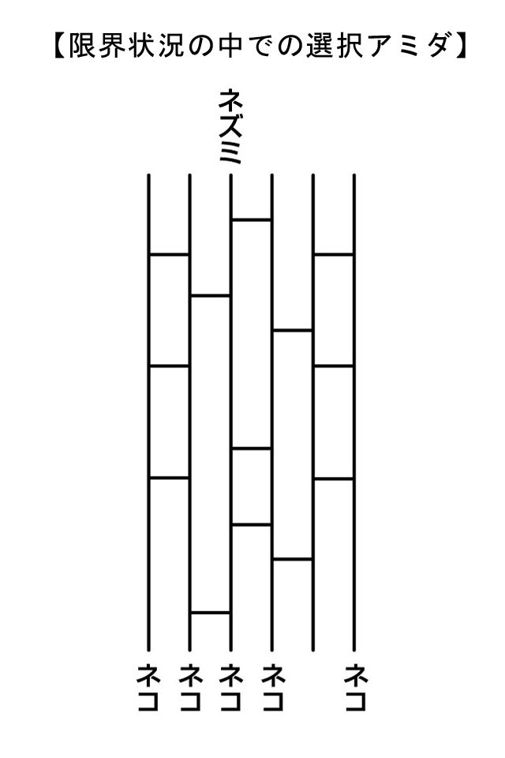
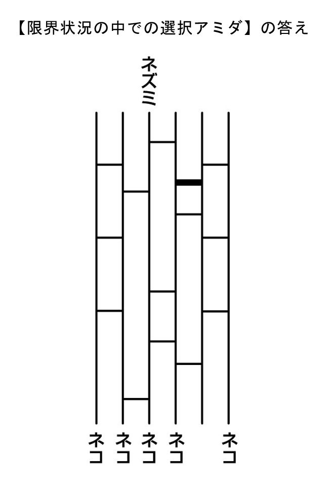
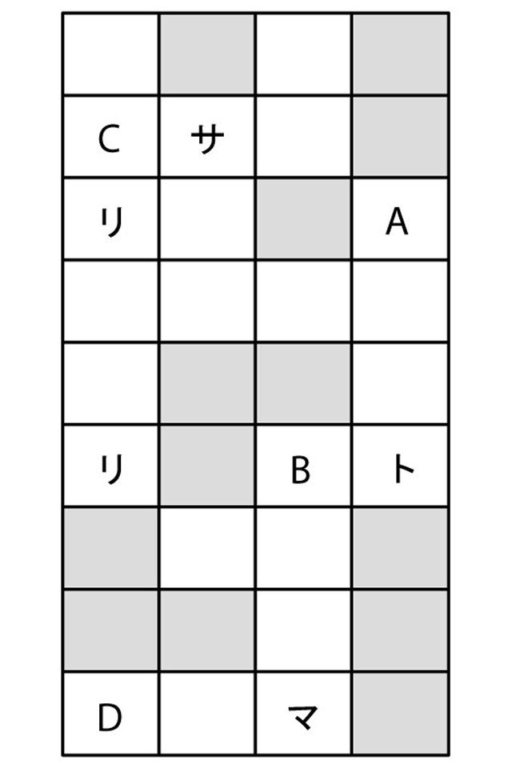
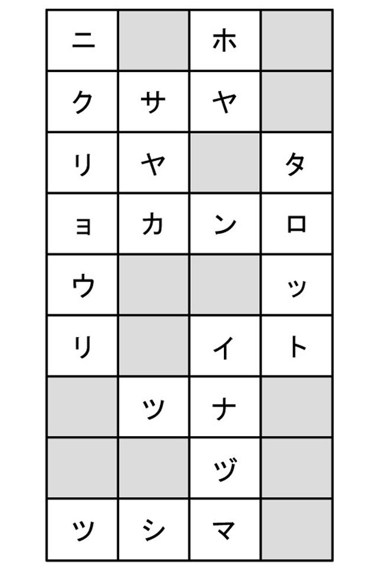
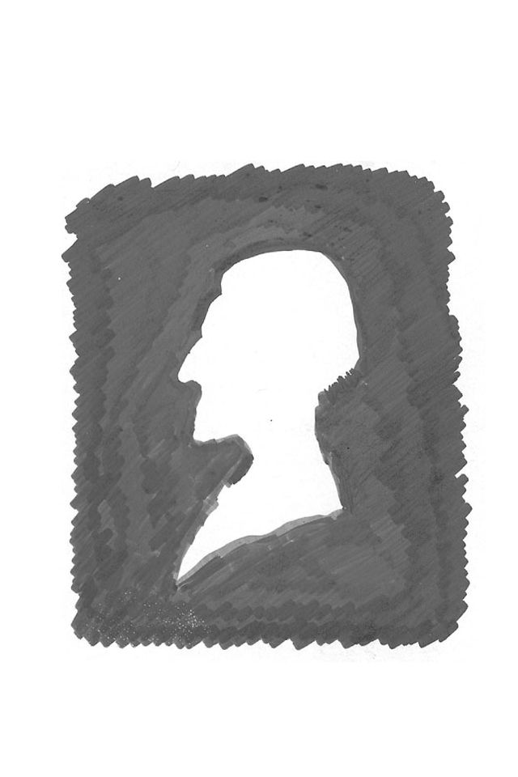

🏠
日
月
縦書き／横書き
装丁
石村紗貴子
本文組版
山中 央
イラスト
ツトム イサジ
はじめに
この世の中には大きなウソがたくさんある。
そのウソの一つは「哲学は難しい」というものだ。
本当のことをいっておく。哲学は難しくはない。こんなふうに書くと、当然ながら反論もあろう。
「あのさ、書店で哲学の本をめくってちょっと読んでみたけど、難しかった。何が書いてあるか、九割がたは分からなかったね」
経験から出てきたこの反論はもっともだ。だが待て。だいたいにして、立ち読みくらいで何が書いてあるか分かろうというほうが無理ではないか。
確かに、哲学書のたぐいは字がびっしり並んでいて読みにくいし、文章が長いし、聞いたこともない用語や外国語が並んでいるし、翻訳が下手なのも事実だ。
でも、読みにくいのと、その中心思想が理解しがたいのはまったく別のことだよ。
うんざりするほど厚い哲学書にしても、重要なところは、実際はそんなに多くないものさ。そして、本当にその哲学がいおうとしている中心の事柄は、ふつうに生活している人間にも理解できるものが多い。
だから、この本ではそのあたりを明確にしてみた。つまり、私たちが考える時に役立つように、今風に解説しておいた。
もう一つ、哲学に対する誤解がある。それは、「哲学は観念的だ」というものだ。
では、「観念」という文字をよく見てほしい。念を観る、とある。これは、想像した映像をあたかも事実のように見るということだね。
実は、私たちは毎日のようにこの「観念」をやって暮らしているのだ。事実の世界だけで生活しているように思い込んでいるだけで、本当は半分以上が観念だ。ただ、その観念が事実と合うこともあるし、合わないこともあるだけなのだ。
だから、哲学だけが観念的なのではない。人間がもともと観念的な生き物だということなのだよ。
＊
さて、どんな哲学者にしても、私たちと同じ人間だ。だから、紀元前から現代までの哲学者たちが考えてきたことは、結局は誰もが一度は考えようとしてきたことと同じだ。ビビることはない。ただ、彼らと私たちのどこが違うかというと、彼らはとにかく最後まで考えて、とりあえずの答えを出しているということだ。
とりあえずの答えであっても、私たちの考え方の参考になる。例えば、「どうしてギャルはギャル語というものを使って、オヤジはオヤジくさい言葉を使うのか」ということすらも分かる。
分かるということは自己満足ではない。まさに、この世界を積極的に理解していくということだ。この世界を理解して生きるのと、理解しないまま手当たり次第に生きるのとでは、雲泥の差！ なのだよ。
＊
本書では、まず問いを出し、ページをめくると古今の哲学者の回答を述べるという形にした。問いには「えっ！ これが哲学なの？」というものも多く、ゲーム感覚で楽しんでいただけるものと思う。
さて、この問いのところで、一応は自分の頭で考えてほしい、というのが私の願いだ。少なくとも五分くらいは、ね。そしたら、回答ページに進もう。
回答には、読者の想像を超えた考えが書いてある。それが哲学のぶっ飛び方である。哲学の考え方はあなたを驚かし、あなたの生活に必ずや新しい風を吹き込むだろう。
読み方の注意：机などに向かわず、寝転びながら、あるいは電車の中で、遊びだと思って本書を読んでほしい。眉はしかめないこと。
これ一冊を読んだあとには、紀元前から現代までの哲学のエッセンスが身についているだろう。そして、あなたの考え方の幅が広くなっていることも請け合う。いやらしいいい方をすれば、頭がよくなっている。「考える力」がついたからだ。この力は、これからの混迷の時代を生き抜くのに何よりの財産だ。お金より尊いものだぜ。
アタマでっかちのインテリではなく、カシコイ人間になること。それこそが人間の魅力というものだろう。
二○○四年一月
白取春彦
01
ぼくらはだいたい道徳という言葉が何となく嫌いだし、ましてや、道徳についていろいろ述べる人をうさんくさく思う。
でも、なぜなんだろう？
だからといって、ぼくらが道徳的でないわけではない。人を裏切るのはよくないと分かっているし、人に親切にしてやることもできる。
それなのに、道徳という言葉が出てくると、「オエッ」となってしまう。
道徳のどこを、ぼくらは嫌っているんだろう？
01
やだね、道徳って言葉。クサイんだよ。偽善者っぽいんだよ。
特に、倫理の教師なんかに道徳の話をされると、うんざりする。てめえは何様だっていいたくなる。
実際、そういうことを人前でしゃべったり講演したりするやつは自分が何か立派な人間であるように勘違いしてるみたいだし。
しゃべるのは誰にもできるんだよ。しゃべるんじゃなくて実行してみなってんだ。
こないだ、どこだかの川で溺れている子どもを救おうとして飛び込んで死んじまった中国人の男がいたよな。あの人、不法入国してて偽名で暮らしてたんだって。
でも、その人をおれは立派だと思うぜ。「助けなきゃ」って一心で川に飛び込んだんだからさ。子どもを助けたら自分が偽名であることや不法入国したことがバレて、何もかもダメになるなんてことをいっさい考えなかったんだから。
その人の勇気よりも、助けなければならないという一点のみで行動したってことで、おれは立派だと思うんだ。本当の人間だって感じするよな。
おれもそういうふうに行動できるかな。あれこれ考えて、どうしようって思っちまうかな。携帯電話で１１９に電話してから、近くに縄とか棒があるかどうか探すかな？
本当にどうやるか分かんねえよな、その場にならないと。
その場に自分が遭遇した時に、本当の自分が出るんだろうな。おっかないよな。死ぬのは怖いしさ。でも、あの中国人が自分の死で人間の立派さを証明したともいえるしな。
もし死ななかったら、日本政府はあの人を不法入国者として中国に強制送還したんだろうか。政府のお得意の法律にしたがってさ。
しかし、法律よりも正しいもの、人間の真実ってものがあると思うよ。それを証明してくれた人を単純に法律違反だと罰していいんだろうか。スポーツなんかで有名になった人には簡単に賞をあげたりするくせにさ。
だいたいにして、法律ってものは最終的には国というか社会の秩序を保つためにあるんだよな。目的を遂行するための手段の枠組みだ。そんなものが人間の上に立つってことはハッキリいって大きなマチガイなんじゃないの？
哲学者たちはかなり前からそのことをいってるんだけど、法律家とか官僚たちは聞く耳がないみたいなんだよな。というか、哲学のテの字も知らないみたいだし。
あのカントだって、『実践理性批判』の中で、善行には二種類あるといってるぜ。
その一つは目的や理由が裏側にくっついてる善行だ。
人に親切にすればいつか自分も親切にしてもらえるという思惑なんかがある善行がこれだよな。ぶっちゃけていえば、損得を考えてんだ。
おれたちが嫌いな道徳というか、嫌いな善行がこれだよ。裏に何かあるのは純粋じゃないって感じがするもの。
その点で、カントはおれたちの味方なんだよな。本当の善行はもう一つのほう、目的や結果を考えない善行だっていってるからね。
それを行うことが善だと分かってることを素直にやる態度さ。偶然に善行をした寅さんが「ただの通りすがりの者です」っていってすっと去っていくああいう態度だよな。
カントはこれを「定言命令法」といって、理由や目的がある善行のほうを「仮言命令法」とかいって区別しているけど、もちろんカントの本心はストレートな善行のほうが本物だということだ。
やっぱしさ、社会のためとか人のためとか、何でもいいんだけど理由のある善行は道徳の中でも下っぱのほうだよな。そこばっかりを立派なふうにいってるから、おれたちは倫理の教師が嫌いなんだと思うよ。
しかし、ストレートな善をやれって命令はどこから来るんだろう。カントは人間の理性がそう命じているのだといってるんだけど。そして、理性がどういう働きを持っているかを説明してるのがカントの哲学なんだよな。
そういうふうに、理性が絶対の善を命じているのだとしているカントはもう一つの本心を隠していると思うんだ、おれは。
何のことかというと、要するに絶対の善を命じているのは神だってことだ。
カントが熟知していた聖書をめくってみれば、神は何の理由もなく命じているだけなんだよ。殺すな、盗むな、愛し合えって命令するだけ。理由はいわないからね。
理由なんかないけど、それらの命令は正しいよな。そういった命令にしたがわないでいると、人間は地球からいなくなっちゃうよな。
で、おもしろいと思うんだけど、そういう本当の善についておれたちは最初から知ってるんじゃないの？ どこで聞いたとか勉強したとかいうわけじゃなくて、何となく当然のこととして誰もが知ってると思うんだけど。
何でだろう。人間に最初から備わっているんだろうか。カントはそういってるね。そういうものはどんな人間にも最初からあるものだって。
そうか、だから倫理の教師がいろいろいっても、おれたちは何を今さらって思っちまうのか。要するに倫理の教師なんかいらないってわけ。
そんなハンパな教師なんかより、本当に人を助けた人が学校に来て体験談をいろいろ話してほしいと思うよ。おれたち、やっぱり本物が好きだからさ。レプリカバイクなんかに乗ってられるか。
回答者／元暴走族現在ボランティア
カント（１７２４～１８０４）は人間の理性の限界について『純粋理性批判』を書き、道徳について『実践理性批判』を書き、美について『判断力批判』を書いた。そして本書を読むことによって、あなたはこの三大批判書のエッセンスが分かったことになる。
02
偽善者、もしくは偽善的な愛（あるいは親切）とはどんなものだと考えますか？
①本当は好きではない人にも親切にしたりすること。
②よい性格の人や美しい人を好んだり、親切にすること。
③お金持ちの人が感謝の笑顔が欲しくて慈善行為をすること。
④かわいそうだという思いから、あるいは同情心から、相手に親切にすること。
02
こんにちは。道徳栄養士のカントです。では、お答えします。
あなたがたのこれまでの愛や親切の観念をくつがえすショックなことを告げなければなりません。それは、②③④の全部が偽善だということです。
あなたがたは、愛を価値の最高のもの、いっさいの価値観の最上に立つもの、至上の倫理、善の最高峰だと考えています。
にもかかわらず、あなたがたは自分の好みに合う人にだけ愛を注ぎ、親切にしていますよね。あるいは、あなたに得になる人にだけ親切にする。あなたに損をさせる人や、嫌いな人には、決して親切にはしない。
それはふつうのこと、自然なことだと、あなたは思っていますが、もしそうだとしたら、あなたは金銭をたくさん持っている人にだけ商品を売る損得づくめの商人と何ら変わりはないのです。あなたのその行為は愛や親切とそっくりに見えはしますが、その内実は損得の計算に裏打ちされたビジネスなのです。
いわゆる慈善行為も、余っているものをあげる、自分に余力のある時だけ親切にするのならば、あなたがたが思い描いている「惜しみない愛」とは異なるものなのです。
条件付きの愛が本物でないくらい、あなたも気づいているでしょう？あなたはさらに深く気づいているはずです。本物の愛は、時と場所と相手を選ばないということを。自分の感性、すなわち感情や気持ちがどうであろうと、愛の実践こそが正しいのだということを。
そうです。本物の愛や親切は、ただ善の意志によってのみ実行されるものなのです。
その意志は、いかなる条件に左右されてもなりません。条件、気分、状況に左右されるならば、それは気まぐれな愛に似た行為にすぎないのです。
もし、そういったものをもひっくるめて愛や親切と呼んでしまうならば、えこひいきや差別も、愛や親切と呼ばれることになるでしょう。また、善悪がケースバイケースで変更されることになり、何が善悪か分からなくなり、価値の混乱が起きてしまいます。
ですから、聖書には愛の掟が次のように書かれています。
「あなたの敵を愛し、あなたを呪う者を祝し、あなたを憎む者に親切にしなさい」
また、「自分を愛するがごとくに他人を愛しなさい」とあります。
あなたは自分が悪い人間であっても、自分にはできるだけよい食べ物を与え、病気にならないよう気づかい、自分が苦しまないようにはからいますよね。それと同じように、他人がどうであれ無条件で愛しなさいという命令なのです。
聖書なんかキリスト教なんかいやだというなら、仏典には「愛してはならぬ」と書いてあります。これは、愛はしばしば自分の好む対象にだけ向けられる愛着となる。だから、そういう狭いエゴイスティックな愛ならば捨てよ、というのです。そして、相手の区別なく親切にせよと教えているのです。
本物の愛は決してロマンチックなものではないのです。
回答者／道徳栄養士カント
愛や善について、カントは『実践理性批判』の中で書いている。それを簡単にいってしまえば、「愛や善行は理性からの要求だ」ということになる。これは要するに「無条件で愛しなさい」ということの哲学的表現である。
そんな難しい表現よりも、聖書の「コリント人への手紙」で書かれている愛の性質のほうがずっと分かりやすいだろう。
03
ぼくは美人が好きです。女性はやっぱり美しくなきゃ存在価値がないとまで思ってます、正直。
で、社内でいちばん美人だと誰もが認める女性と交際したんですけど、どういうわけか、だんだん美人じゃなくなってくるんですよね。
ミスコンで優勝した女性とつき合ってもみたんですけど、やっぱりだんだん美しくなくなってきました。不思議です。
でも、こういうのって哲学とは関係ない問題ですよね。
相談者／鴻巣から長距離通勤している安男
03
あーら、いらっしゃい。ずいぶんごぶさたじゃない？
顔を見せた早々、そんな相談？いいわよ、チャージが高くなるだけだから。そうね、あたしも昔は美しいってよくいわれたわ。二丁目のオードリーって呼ばれたものよ。
歳とってきたら、新宿二丁目のカントですって。インテリジェンスが加わったのかしらって思って、カントの肖像画を見て驚いたわ。あたし、あんなふうかしら？
そうね、「美とは何か」ってのは哲学の昔からの問題だったわけなのよねえ。古代のプラトンなんて人は、本当の美は天上界にあるなんてシレっといってたし。
黄金分割ができたのも確かあの時代よ。黄金分割、知らない？分割払いのことじゃないわよ。縦と横の比を１対１・６１８にすれば、もっとも美しいっていうルール。
この黄金分割、人間には使えないと思うわ。建築には十分使えるけれどもね。人間だったらエステってのがあるじゃない。
しかしよくもまあエステって言葉をたんなる美容に使ったものだって感心するわ。だって、エステティックって言葉、哲学用語なのよ。意外なトリビアよね。
もともとはラテン語（aesthetica）で「感性」という意味。それをドイツ語にして論文で使ったのが十八世紀のバウムガルテンという哲学者。バウムクーヘンじゃないわよ。
バウムガルテンは美について哲学したんだけど、女の美とかじゃなくて、もっぱら芸術の美について考えたの。でもまあ、美学を始めた人としては有名なのよ。
その次に美について考えた有名な人はやっぱりカントよね。
あたし読んだわよ、『判断力批判』って本。あの本って、その前にカントが書いた『純粋理性批判』を読んでなきゃ理解できないのよねえ。で、十日もかかったわ。
カントはおもしろいことを書いてたわ。「快適さは動物にとっても意味があるが、美しさは人間にとってしか意味がない」だって。
あたし、すぐに温泉に入ってる猿を思い浮かべたわ。ああいうふうに動物でも快適さを知ってるの。でも、お猿さんには美しさがぜんぜん分からないの。なぜって、動物には理性がないからよ。
人間には理性があるから欲求を抑えることができるわけであってさ、理性の欠けている動物は欲求とか本能にしたがって生きることしかできないものね。
ところで、カントは美には二つの種類があるっていってるわ。「自由美」と「随伴美」の二種類。
自由美なんて自由の美みたいな感じだけど、そうじゃなくて概念に毒されてない美しさってこと。
じゃあ、純粋な自由美から美しいのは何かというと、例えば野の花だわ。
名前も分からないような野の花はどんな意味もテーマも持っていないし、何かを強調して表現しているわけでもないでしょう。ただ美しい。それが自由美なの。
貝の模様とか自然美のほとんどは自由美なんだけど、人工のものでも自由美に近いものもあるわ。
クラシック音楽がそれね。歌詞がついていないから特定の意味もないし、概念から離れている美しさがあるといえるわ。その対極は演歌かしらね。
イスラム圏の国で見られる壁面装飾のアラベスク模様も概念から遠い美しさを持っているといえるわね。
もう一つの随伴美は、「その目的の概念を完全に近い形で表して」いるようなものの美しさのこと。サン・ピエトロ寺院とか、ター・ジ・マハールとかよ。信仰という概念を表現しているんだから、その概念に随伴した美だということね。
パルテノン神殿は美しい建物だわ、確かに。黄金分割にものっとっているしね。でも、あれは概念にべったりと毒された美しさなの。神々しさとか伝統とか、厳格さとか潔癖さという概念。建造する段階でそういう意図もあるし。
競走馬の美しさもこの随伴美だし、男や女の美しさも随伴美なのよ。
化粧品のポスターに写っているモデルを見れば分かるわ。きれいだわよね。でも、あれは今の時代の人たちが女性というものに対する概念を表現した美しさでしょ。
そういうのが随伴美だというわけ。自由美よりは格が下だというわけ。
だいたい分かったかしら。ポイントは概念がひっついているかどうかというわけ。
だから、あなたがある女性を遠くから見ていた時、美しく見えたというのは、あなたがその人に対して無関係だったし、彼女に対する概念も薄かったからなの。
そして、おつき合いしているうちに、美人に見えなくなるのは当然なのよ。何しろ、あなたと交際して親しくなったからよ。
分かるかしら、自分からの距離が遠いほど、自分の概念との関係が薄いほど、人間は美を感じるってこと。富士山が美しいのも、外国の女優が美しいのも、あなたとはゼーンゼン関係がないからなのよ。
思い出だって同じよ。時間がたつほど美しくなるでしょ。時間がたって、今のあなたとは関係がなくなったからなの。
だから、あなたがどんな美人と交際しても、彼女はそのうち美しくなくなるわ。そのかわりってわけじゃないけど、彼女はかわいくはなるわね。それで満足できないなら、ふふ、こっちの世界もあるのよ。やだっ、ほんの冗談、冗談よっ。
回答者／新宿二丁目のカント
何が美かという問題は、二千五百年たってもまだ続いている。しかし、カントのこの当座の結論は美学上いまだ重要な意味を持っている。
よく聞く「美はその時代の文化の反映である」という意見はもっともらしいが、要するに概念が反映された随伴美のことしか語っておらず、純粋な美については通用しない。
なお、カントのこの『判断力批判』を喜んで読んだゲーテは「美とは移ろいやすいものだ」と作品の中で述べている。ゲーテは一瞬のはかない美を好んだのだ。
04
ひま？ だったら、アミダでもやる？
どこかに一本だけ横線を引いて、ネズミが猫につかまえられないようにしてね。
え、哲学に関係ないって？ 関係あります。
だから、わざわざアミダなんか作ったんだから。

04
グーテンターク！ヤスパースです。たった今呼ばれて、霊界から降りてきました。
ちょっと時間があったので高田馬場方面の本屋に寄ってみたのですが、私の本がなかったのはともかく、ベルジャーエフの本もマルセルの本も見つかりませんでした。
しょうがありません。日本の人は宗教の匂いがする哲学は好まないみたいですから。
さて、哲学は大昔から「人間とは何か」と考えてきたわけです。私も若い頃から、社会とは何か、人間とは何かということを考えてきました。
そうして私は初めは法律を学び、次に医学部で精神病理学を学び、それでも満足できなくて最終的には哲学を学びました。
結果ようやく分かったことは、人間は研究の対象にならないということです。確かに、現象と行動によって人間存在の一部を知ることはできるのですが、全貌を認識することはとてもじゃないが不可能です。
科学的に考察しても認識すらできない。そもそも、人間自身、自分が何であるかさえも知ることはできない。えっ、あなたは自分が何であるか知ってるって？
それはね、今あなたがそう思ってるだけです。「自分はこれこれこういう人間だ」とあなたは胸張っていうかもしれませんが、あなただっていろんな状況においてころころ変わっていることを知らないんですか？
二面性があるとか、相手によって態度を変えるという意味じゃなくてですね、状況の中で人間はそのつど自分の生き方や行動を選んでいくという意味です。
その選び方によって、よい人間性をめざして生きることも、人間性を否定するような生き方もできる。しんどい状況に耐えられず、自分をごまかして生きることもできる。
そういう意味で、人間には自由があるのです。それだけ自由な存在は人間だけです。他の動物には選択の自由なんかないのですから。人間は自然の中の例外なんです。
人類という呼び名があるものの、実際にはどんな人でも誰とも交代できない唯一の一人として価値があるのです。誰もが歴史上の貴重な一人としてあるのが人間なのです。この事実がしかし、いつのまにか見過ごされてしまっているのが現実です。
体験を述べましょう。私の妻がユダヤ人であったため、ナチスは私に離婚を強制しました。ナチスは彼女をユダヤ人という類でしか見なかったのです。
けれども、私は離婚を拒否しました。その結果として、ハイデルベルク大学を追われて職を失ってしまいました。でも、私は悔いていません。彼女が私の妻であることを私は選んだのですから。
そして、ナチスの収容所へ送られる期日の二週間前にアメリカ軍がハイデルベルクを占領して、私たちは命を救われたのです。ドイツ人である私が同じドイツ人のナチスから殺されかけ、敵であるはずの人間によって救われたのです。
私は自分が殺されないために妻と離婚することもできた。それをしなかったのは私が強いからではない。妻が私の妻だからです。彼女こそ私の妻としてこの世で唯一の存在だからです。
別に夫婦愛がどうのこうのというつもりはありません。限界状況において人間が何がしかの態度を選択して生きなければならない時、時勢や権力への服従や盲目的同化ではなく、どんな一人をもかけがえのない者として接することのできるような選択をすべきだと思うのです。
そういう態度にこそ、人間性の価値が生まれてくるのではないでしょうか。
この時に、私たちは超越者、神の気配を感じはしないでしょうか。
神といっても、これこれこういう神だと説明することなど不可能です。説明される神ではなく、そういった認識を超越している存在。いっさいを包括している者。だから、私は神ではなく、「包括者」と呼んでいます。
こんなことをうっかりいうと、新興宗教の創設かと疑われるかもしれません。しかし、私はいちキリスト教徒であります。それでもなお、私は哲学者として、哲学的信仰というものもあるのではないかと考えているのです。
長々としゃべってしまいました。分かりにくかったですか。私の著作も分かりにくいといわれるのですよ。しかし、私は自分の哲学が理解されることよりも、あなたがたが真に価値ある人間像を遠くに見続けて生きていくことを望みます。
キリストは「私のようになれ」といいましたが、私たちにはやはり人間としての弱さがある。完全なる愛に満ちた人間像にはなかなか達しない。けれども、人間同士の愛の光に向かう姿勢こそ大切なものなのではないでしょうか。
そういう生き方をするためにも、カントが残した次の言葉は重要だと思うのです。「どんな人間も手段として用いられてはならない。人間が目的なのである」
回答者／恐山イタコ見習い
モノとは何か、とか、真理とは何か、とか抽象的な議論をせずに、人間の生き方に関わる哲学のことを実存主義という。
実存主義の実存は、現実の存在を重視する意味だと考えてかまわない。
この実存主義の哲学を始めた人はデンマークのキルケゴール（１８１３～１８５５）という人である。世界とは何か、歴史とは何か、という大上段に構えたヘーゲルの哲学が流行していた時に、キルケゴールは人間の魂に触れる哲学こそ大事なのだとしたのである。
実存主義という言葉はすでに消えかかっているが、その精神は現代もなお尊重されるべきだと思う。なぜならば、キルケゴールやヤスパース（１８８３～１９６９）が生きた時代よりも現代のほうが人間性の危機が高まっているからだ。
05
ニーチェは「神は死んだ」と宣言しましたが、あなたは神の存在についてどんなふうに考えていますか？
①しょせん、神は人間が作ったフィクションだと思う。
②神はいると思うけど、既成宗教の神のような存在ではないと思う。
③本当に万能の神がいるなら、こんなひどい世界を創造してはいないと思う。
④神は完全なものの擬人化だと思う。

05
で、何だい？神の存在の問題？んな、やっかいだなぁ。久々に休みがとれたん
で、新しい雪駄とべったら漬けを買いに浅草まで歩っていこうと思ってたのによ。
ニーチェ？「神は死んだ」？うん、確かにニーチェはそう書いてたな。でもな、これ、ちっとばかし翻訳が悪かったな。原文は状態を表すドイツ語だからよ。「神は死んでいる」とするほうがまぁ正しいよな。
だからってニーチェは無神論者だって考えんなよな。「神は死んでいる」っていうのならよ、こないだまで神は生きてましたってことで、その時までは神がいたことを認めてる発言なんだからな。これが分かんねえ学者もいるんだよな、ケッ。
で、実際に神はいるかどうかって？何で俺なんかにきくかなぁ。他の先生方は休みだってか。チッ、しようがねえなぁ。
神の存在証明ってのは、いろんな哲学者が昔からやってきたんだよな。有名どころでいえばデカルト、スピノザ、パスカルとか。でも、どれもイマイチよ。
ってのはな、論理で証明されるなら、証明された神は本物の神じゃねえっつーの。だってよ、証明できるのなら、証明する力のほうが神より大きいってことにならねえか？
だよな。宇宙の全体がどうなのかってこともまだ分かってねえのによ、宇宙よりでっかいはずの神の存在が、ちっぽけな人間の論理で証明できっこねえだろ。
じゃあ、神はいねえのかって？それがそうでもねえみたいでな。考えてみな、宇宙っつーか、この地球でもいいや、あまりにも人間につごうよくできてるって思わねえかい？
例えば、水だ。水ってえものがなきゃ、人間は生まれねえだろ。この水って不思議なもんでよ、摂氏零度で凍って氷という固体になるし、およそ百度で沸騰して気体になって飛んでいかぁ。摂氏四度では、もっとも体積が小さくならぁな。
そして、この特殊なものが地球にだけ豊富にあるからよ、人間はどうにか生きてられんだぜ。偶然にしてはおかしいだろ。意図的な感じがするよな。
それから、神って観念も不思議だよな。神って観念が全然なくてもいいわけだよな。
しかしな、神の観念がどこかにあるから、人間はどうにかこうにか最悪の生き物にならずにすんでんじゃねえのかなぁ。神の観念が悪にブレーキかけてんじゃねえのかなぁ。
それによ、神がいなきゃ希望ってもの持ちようがねえだろ。きっとよくなる、どうにかなる、真実は必ず認められるって希望は、何か偉大な存在を期待してる証拠だよな。
でなきゃ、人間は絶望することしか知らねえだろうな。祈るってこともなくてよ。そして、人間は今よりもっとバカで残酷だろうな。百万倍くらい。そいでもって、とてもこの二十一世紀まで人類は生き残ってなかったと思うんだよな。
そんなことをつらつら考えてみるとな、神なんかいねえとするより、神がどこかにいると考えるほうが自然っつーか、やっぱし間尺に合ってるようなんだよな。
回答者／大工棟梁の源さん
神の存在証明については、大昔からたくさんの人々が試みてきた。アンセルムス、デカルト、スピノザ、パスカル......。しかし、どの証明も完璧ではなかったし、論理の誤りを指摘されてきた。
興味深いのは、多くの論者が神が完全なる実在の存在であることを証明しようと努めていることである。そして、その際に聖書の次の記述を忘れていることである。
新約聖書にはこう書いてある。「人が二人いて愛し合っているならば、そこに神はいる」「神の別の名は愛である」
これらの記述が真実であるならば、存在証明などはもはや不要となる。
06
ねえ聞いて、聞いて。
あたしのカレシって、何でもハッキリ分けたがる人なの。そのいさぎよさがチョー男っぽいっともいえるんだけど。バスタオルだって、上半身用と下半身用に分けてるくらいなんだから。
でさ、そのカレシの口癖なんだけど、「男って生き物は心と体が別々なんだから、体で浮気してもそれは本気じゃない」っていうの。そいでさ、カレシって必ずゲラン系の香水つけてるオンナになびいちゃうのよね。
あたし、カレシが風俗へ行ってちょこちょこって遊ぶくらいなら許せるんだけど、何だか香水にふらふらってなって浮気するのって、心も浮気してるような気がすんのね。だって、オンナの匂いとかって、何となく精神的なものって感じでしょ。
でも、そのへん本当はどうなのかな。あたしもこのへんでハッキリさせたいんだけどさ。
相談者／ドラッグストア狂いのアユ
06
ハッキリさせたいっつうから、ハッキリさせとくか。
きみはカレシにだまされてるだけ。心と体は別々なんて、カレシのたんなるいいわけ。だってさ、心は必ず体に現れるんだからな。ウツ病なんか心の病気だっていわれてるけど、頭痛とか胃痛という症状でちゃんと体にも現れるもんだしな。
そんな病気じゃなくても、健康な人だって心は体に現れるのがふつうだよな。心に優しさがあれば、態度も優しくなるしさ。心が疲れてる人は疲れた歩き方になるし。
体のほうから心に影響を与えるのもあたりまえのことだ。食事すれば元気になるしね。空腹だと考え方もかなり変わってくるかンね。
だから、他人に何かを頼む時でも、相手が空腹か満腹かで態度が違ってくる傾向があるんだよ。
そんなふうに自分の経験を考えてみただけでも、心と体は別々だなんていえないよね。
だのにさ、きみのカレシみたいに心と体は別なんだって考えてる単純なオトコって、まだ意外と多いかもしれないね。
そういうふうに考えるのを「二元論」っていうんだ。この世のすべてについて元をたどれば、最終的に精神と物質のどちらかでしかないという考え方だ。
この考え方の元祖はデカルトっていうフランスの哲学者だ。「我思う、ゆえに我あり」という有名なフレーズはこの人が『方法序説』という本を書いて発信したわけ。
で、デカルトの二元論からすれば、心、思い、感情というものは当然ながら精神のほうに分けられる。一方、体とかモノは物質だ。
そこで出てくる問題は、香水はどっちだろうってこと。香水は液体でモノなんだから物質だよね。じゃあ、その香りもモノなんだろうかという素朴な疑問。
現代の科学技術からすれば、香りの正体は粒子だと分かるから物質でいいんだけど、デカルトが生きていた十七世紀はそんなことは分からなかった。
で、きっちり分けたがる性格のデカルトが考えたのは、匂い、色、重さ、大きさなどは物質の「延長」だということ。
延長というのは、空間内の一定部分を占めるようなモノの在り方のことだ。つまり、その条件を満たしていれば物質なのだとデカルトは勝手に決めたのだ。
現代の考えからすれば、延長というのは人間の主観が考えた事柄であって本当に事物に属するかどうかという疑問が出てくるわけだけれど、当時のデカルトはそういうふうに断定してしまったわけだ。
で、きみのカレシの問題。心と体は別だから浮気は本気じゃないってやつ。それはヘリクツの典型だね。もし心と体が別だとしても、実際には別の何かが一緒に存在してるんだから、その責任も同じだと考えることができるからね。
でもさ、香水という物質になびく心を持っているカレシってどんな神経なんだろ。
回答者／渋谷のマヅモトキヨジ
デカルト（１５９６～１６５０）はこの二元論によって近代哲学の祖となったといわれている。それはこの二元論がすばらしいということではなく、それまでは哲学はもっぱらキリスト教哲学に限られていて、デカルトのようにまったくゼロから自分の頭で考えることに憶病になっていたからだ。そうしてデカルト以降、さまざまな哲学が開花し始めたのだ。
07
異常に嫉妬深くて、いちいち行動をチェックしては束縛したがるカレシとようやく別れることができたユウカ。
代官山で一人暮らしを始め、今までのウサを晴らすかのように友達と遊びまくり、旅行や夜遊びを楽しんでいたのですが、最近になってありあまる自由が何だか重く感じられてしかたがないという。
かといって、誰かに束縛されるのなんか死んでもイヤ。しかし、自由気ままなはずなのに、なぜだか自由だという感じがだんだんしなくなってきているそうです。
いったい、どうして？
07
ああ、知ってるよ。「自由は本当はしんどいんだ」ってことをいって女にもてまくってた男がいたね。
もう五十年も前のことだ、あの男が人気者だったのは。モンマルトルのカフェで昼間っから女の子たちとしゃべりまくってたサルトルのことさ。
あいつは何でもかんでも人と反対のことをいってたような気がするよ。とにかく今までの哲学とは真っ向から反対の論を書いたり、いったりしてたね。
しかもたんなる反対じゃなくて、もっともらしい理屈をつけてたもんだから、いかにも新しい考えのように見えてブームになったんだよな。まあ、時代が時代で、反体制のことは何でもカッコいいように見えたからね。
それに加えて、サルトルにはコピーライティングの才能があった。「人間は自由であるべく呪われている」なんていうんだから。ふむ。
自由はふつうポジティブな言葉だろ。それなのに「呪われている」なんてどういうことだろうって興味をひいちゃうよな。そのへんのいい回しには抜群にたけてたな、あのサルトルってやつはさ。
難解でくどいだけのハイデッガーの『存在と時間』をパロディ化したようなタイトルの著書『存在と無』にもこう書いている。
「自由であるべく運命づけられている。......自由の他に、いかなる限界も見出すことはできない。......われわれは自由であることをやめることについて自由ではない」
こういうふうに部分的にだけ読むと、「いいじゃん、とにかく自由なんだから」と思うのがふつうだ。確かに、自由は不自由よりはずっといい。
その場合の自由は束縛や制限がないという意味だ。さっきのユウカさんもカレシからの束縛を脱してようやく自由になったから好き勝手に遊び始めたわけだ。
しかし、サルトルのいっている自由とは要するに、人間にはいつの場合でも選択する自由があるということだ。いいかえると、選択することしかできない。
日々の生活、その場での行動、あらゆることに人間は自分の行動を選択している。だいたいきのうと同じように生きるだけという人でさえ、そういう選択をしていることになる。
つまり、積極的であろうと消極的であろうと、選択していることに変わりはない。例えば選挙で投票しないということは選挙に関わらないということではなく、棄権という選択をしたことになるわけだ。
選択をしたからには、その結果として生じてきた事柄に責任を負わなければならない。 関わらなかったから関係ないよとはいえない。無気力であろうが拒否であろうが、関わらなかったという選択によって結果を生んだという責任がつきまとってくる。
だから、勝手気ままに遊んでいたユウカさんも、自由はいっさいの責任から解放される特権ではないということに気づき始めたわけなのだ。
遊びで自分の人生を浪費することもできる。将来のために備えることもできる。何をするにしても、そこから出てきた結果を背負わなければいけない。いやだといっても選択しなければならない。自由の呪いとは人間のこの状態のことなのだ。
回答者／カフェバー経営サルトラズ
サルトル（１９０５～１９８０）は日本でも60年代に異常な人気を得ていた。しかし彼のいわば無神論的実存主義哲学は底が浅く、今では哲学者に数えられないこともしばしばである。
08
有名な曲のテープやＣＤに妙な人声が混じっていたということがうわさになったりしますよね。そこで聴いてみると、実際に「助けて」とか「連れてって」とか聞こえたりします。
これが本当に霊の声であるかどうかはともかく、どうしていつも日本語の標準語なのでしょうか。方言でもいいし、オランダ語でもロシア語でもいいのではないでしょうか。
それとも、外国人や地方の人間の霊の声を私たちはたまたま聴き逃しているだけなんでしょうかね。
08
謝肉祭のあとの休みの日だよ、メアリーがエルヴィスのレコードを持ってきたのは。「聞いてよ、ノーウッド。アパッチ族の祈りの声が録音されてるの」っていうんだ。
ぼくはとりあえずそのレコードをかけてみたけど、その前に彼女に対する返答は決まっていたさ。ゲーテの例のあの言葉さ。
「人間には知っているものだけが見える」
メアリーったらぽかんとしてたよ。もっとも、親切心から「理論負荷性」のことを話したって、彼女はプレーリードッグのように口を開けたままだろうけどね。
だから、ぼくは続けてこういうしかなかった。
「いいかい、メアリー。きみがインディアンの血を引いてなくて、インディアンの誇り高い伝統的な言葉も分からなかったら、この祈りの声も聞こえなかったろうさ」
「そうよ、あたりまえじゃない」
彼女にはまだ分かっていないのだ。ぼくは肩をすくめたいのを我慢していた。そうしなきゃ、もうメアリーがあのワッフルを作ってくれなくなるだろうと思っていたからだ。
ぼくは息を整えてから、「びっくりハウスを見たことはないのかい？」と聞いた。
「さっきから変なことばっかりいってるわ。エルヴィスのレコードにアパッチ族の祈りの声が入ってることを聞かせにきたのよ。何よ、今さらびっくりハウスだなんて」
「うん。でも、びっくりハウスは知ってるよね」
「あんなの、子どもの時にさんざん見たわ。結局は目の錯覚よ。だまし絵と同じ。本当は斜めになっているのにまっすぐに見せかけてたり」
「しかし、まっすぐに見えたろう。歪んでる部屋なのに、目にはまっすぐだったろう」
「そうよ。だから、あんなの目の錯覚だっていったじゃない。あたし、びっくりハウスのあのくそったれな床の上で転んじゃって、その傷がまだ膝小僧に残ってるわ。いいえ、そんなことより、問題はどうしてエルヴィスのレコードにアパッチ族の声が入っているかってことよ。あやうくだまされそうになったわ」
「分かってるさ。だから、その説明をしてるんじゃないか」
「ノーウッドったら、驚きもしないのね」
「つまり、こういうことだよ。きみにはインディアンの言葉が聞こえるんだ」
「そうよ。もう何度もそういってるわ」
「でもね、それは風にそよぐプラタナスの葉が何か秘密めいたことをささやいているように聞こえるのと似たようなことなんだよ」
「錯覚だっていいたいのね」
「そのいい方がきみをおとしめるように感じるんだったらやめるよ。でもね、人間ってのはみんなそうなんだよ。きみもぼくも」
「だったら、他の人にもアパッチ族の祈りの声が聞こえるはずよ」
「もし、他の人がきみのようにインディアンの言葉を知ってたらそうさ。いいかい、メアリー、人間というのはね、何でも合理的に見ようとしてしまうんだよ」
「合理的って悪いこと？ 無駄がないのだからいいことだとあたしは思うわ」
メアリーはクッションを抱きかかえた。いい負かされそうになる時のいつもの癖だ。
「うん、いいとか悪いとかはともかくさ。例えば、医師ガレノスの説だよ」
「そんな医者の名前なんて聞いたことがない。美容整形の医師？」
「紀元二世紀の古代ギリシアの医者だよ。とにかくガレノスは、人間の心臓の隔壁に穴があって血液はそこから出入りしているって説を立てたんだ。人体解剖なんかしていなかったのにさ。そうしたら、あとに続く医者たちもみんなそう思い始めた。何といってもガレノスは医学を基礎づけた人だからね」
「それで？」
「いいかい、一人の医師だけじゃない。多くの医師たちはそれから千四百年以上、ハーベイというイギリスの医師が心臓の血液循環を明らかにするまで、ガレノスの説を信じていたんだよ。その間に医師たちは人間の解剖を何度もしてるにもかかわらず、だよ」
「バカみたい。解剖して自分の目で見れば分かることなのに」
「そう。もし、彼らがガレノスの説を知っていなかったら、正しく観察できたかもしれないね。けれども、ガレノスの説が医学知識として頭の中にあったものだから、観察の時の見方もそれに合わせてしまったんだ。つまり、観察は理論を変える力を持たないんだ」
「思い込みってやつね」
「そうともいえるね。ぼくたちはウサギとアヒルがどういう形のものか知っているから、二匹の白い動物がウサギとアヒルだと分かるんだ。それがまったく別の動物であっても、形が似ているだけでウサギだとかアヒルだと決めつけてしまう。それと同じことなんだ」
「じゃあ、ノーウッド、あなたはこういいたいのね。あたしに聞こえるインディアンの言葉は本当はまったく違うものかもしれないって」
「まあね」
ぼくは今度こそ肩をすくめようとした。しかし、それよりも前にメアリーから猛烈な勢いでクッションが飛んできたのだ。
回答者／飛行機野郎ノーウッド
科学観察の際には、すでに既知の理論のプレッシャーがかかっていて、それが観察をコントロールしているという「理論負荷性」を説いたハンソン（１９２４～１９６７）の人生はあまりに多様であった。
彼は最初はピアニストだった。それから米軍海兵隊のパイロットになって参戦し、その後は物理学と哲学を学んで大学で教えたという経歴を持っている。最後は愛機グラマンの事故で四十三歳で死んだ。
彼のとなえる「理論負荷性」は私たちが経験の上からでもおぼろげに知りうることだが、それが科学観察の上にもあるというハンソンの説は想像以上に重大な意味を持っている。なぜならば、装置を用いて科学的観察をする場合でも、その装置自体が理論に沿った仕掛けのものだからだ。
09
あたし、朝なかなか起きれない人だからさ」と、自分のことを「〜な人」といういい方をする若い子と、簡単に社員のクビを切る経営者と、女の子を誘拐監禁して何とも思わない男との共通点をあげてみてください。
09
おせっかいなようだけどさ、「あたし、朝なかなか起きれない人だからさ」といういい方、あんましよくないと思うよ。
別に、日本語がどうのこうのってわけじゃなくてね。うん、朝起きれないのが悪いってのでもなくて。その、つまりさ、自分のことを「～な人」っていういい方。
それってさ、自分をつき離してるいい方だよね。何だか、自分のことなのに自分は責任持てませんっていってるような感じだよね。冷たいっていうか。距離を置いてるっていうかさ、そういう感じ。
そういうふうに距離を置いた見方をすることを、もうちょっと難しい言葉で「客体化」っていうんだよね。客体化するってことは、冷たい視線で見るっていうか、結局は相手が人間でもモノ化して取り扱うことになっちゃうんだ、自然とさ。
例えば、きみのカレシを客体化して見れば、「時給で働いている低所得の若者」ってことになっちゃんだ。いやだよね。
きみのママは「中年の主婦」でしかないし、きみのパパは「商店従業員」だぜ。人間性無視って感じだろ。これが客体化さ。
なぜ客体化がいやな感じかっていうと、役割とか機能の点でしか相手の存在を認めないって態度だからなんだよ。そういうのはふつう、モノとか機械を見る時の見方であって、人間に向けちゃいけない視線なんだよ。分かるよね。
ところが、今はそういう目で人間を見るようになってることが多いんだよ。だから、会社員はたんに金銭を発生させるマシーンとしか見られなくなって、簡単にクビを切っちゃえるんだね。
モノは合理化してもかまわないけど、人間は合理化しちゃいけないに決まってるさ。だって、人間はもともと非合理なものなんだから。
それなのに、合理化しちゃう。これはとんでもなくひどい行為だと思わないかい。
どうしてこんなひどいことが行われてるかっていうと、経済が社会の最重要な価値観になっているからなんだ。
経済はモノも人間も数字にして考えるだろ。つまり、すべてを客体化して考えることがあたりまえになってるんだ。「消費者」といういい方も客体化だからね、ハッキリと。
ナントカ鑑定団ってＴＶ番組があるじゃん。けっこうおもしろいけど、あれだって骨董品を金銭に客体化しちゃってるよね。美術の世界なんかひどいもんで、何億円だから価値があるっていいきっちゃってるもんね。
いいかえれば、客体化は今の時代のもっとも有効な認識の仕方だってわけだ。
でもさ、客体化が当然とされる社会は、まず孤独を生むね。なぜなら、客体化の世界は精神が意味を持つ世界ではないからね。きみがいくらもうけるかには関心を向けてくれるけれど、きみがどんな気持ちでいるかには無関心な社会だもの。
客体化したら、恋だってできない。例えば、自分が好きになった人が何らかの点において他の人よりも劣っているとするよね。客体化して考えるならば、劣っていることよりも優っていることのほうがマシなわけだから、あなたが別の人を好きになってもあたりまえということになる。みんなこんなふうに考えるようになったら、愛なんてどこにもなくなるってことくらい分かるよね。
それだけでもしんどいのに、もっとしんどいことが出てくる。つまり、もっといい人間になろうという努力ができにくくなるってことだ。
何事も損得ではかられるのだから、お金にならないことへの努力とか、いい人間になるための努力が認められないどころか、軽蔑されたりするんだよ。人間は本来、いい人格を形成していくことに喜びを持っているのに、それが邪魔される。悲しいことじゃないか、本当にさ。
異性を客体化して道具のようにしか見ない男も増えてるよね。だから、女の子を誘拐して監禁し、オモチャのように扱うわけだ。女の子がモノにしか見えていないわけだ。
そんな時代だから犬を飼う人が増えるのは当然さ。癒し効果？ というよりも、自分を客体化せず、他をも客体化しない生き方のあからさまな見本が犬だからさ。
飼われている犬は、主人を餌を運んできてくれる道具とは見てないよ。餌をくれなくても、主人を主人として愛してくれる。これが本当の「関係」というものなんだよ。
だからさ、この生きにくい社会の中で、本当に人間らしく自分らしく生きるために必要なことは、まず第一に、自分をも他人をも客体化して見ないことさ。
単純な実例をあげれば、他人の痛みや喜びがあたかも自分のことであるようになれってことだよね。
それから、価値観を決して金銭や役割や効率や効用におかずに、ただ愛の観点から何でも見ようってことさ。どんなことにも、そこに愛があるかどうかを重要視するんだ。
同じ「ありがとうございます」って言葉でも、接客マニュアルだからというのじゃなくて、本当に感謝の気持ちにあふれていれば気分がいいじゃん。人間ってけっこう敏感なものなんだよ。
だからさ、まずはきみから愛の革命を始めなきゃ。
回答者／無血革命家ベルジャーエフ
ロシアで生まれパリで思想活動を展開したベルジャーエフ（１８７４～１９４８）はすでに、現代文明社会の自由の本質が奴隷状態だということを見抜いていた。ルイ・ヴィトンのバッグが買える現在の自由は、人間にではなく、商品にしか価値というものを見出せなくなった心の奴隷状態である。
ベルジャーエフは愛や本物の自由を求めることを訴えているのだが、日本でその名前を聞くことは少ない。というのも、彼の思想背景にはキリスト教があるからだ。日本人は、思想の背景にキリスト教があるとその思想は偏向していると思い込んでいるのである。したがって、彼の本は古書店でとても安く買えることになる。
10
パズルを解いて、ＡＢＣＤをつなぐと意味ある熟語が出てきます。

【タテのかぎ】
①占いに使うカード
②別名は海のパイナップル
③夏の空に光る?
④松田聖子さんの娘
⑤魚料理でなければ?
【ヨコのかぎ】
⑥おいしい干物だけど......
⑦鮒の～煮
⑧マグロの加工品
⑨壱岐と並んでる島の名
今あなたは「ＡＢＣＤ」だったから、このパズルを解いたわけですよね。
なぜ、あなたは時々「ＡＢＣＤ」すると思いますか？
10
クロスワードパズルはちゃんと正解できたかな。答えは「タイクツ」。漢字では退屈。五分くらいかかった？じゃあ、五分くらいは退屈がまぎれたわけだ。
ところで、これまで人間についてはいろいろ名づけられてきている。例えば、
ホモ・サピエンス「理性的人間」
ホモ・ファーベル「工作的人間」
ホモ・ルーデンス「遊戯する人間」
アニマル・シンボリクム「象徴的動物」
ホモ・ログエンス「言語を操る人間」
といったふうにだ。

しかし「ゲロを吐く人間」という名称はまだつけられていないし、今後もないだろう。なぜならば、猫のタマでもゲロを吐くことがあり、人間だけのきわだった特徴ではないからだ。
さて、二十世紀の半ばに活躍したドイツの哲学者ハイデッガーは人間の本質を「時間性」だとした。
人間は時間を感じ、知っているだけではなく、時間的な存在だからだ。
時間的な存在とは、ある程度の時間しかここに存在していないようなものだという意味だ。生まれてきて死ぬ。ちょっとの間しか、この世に存在していない。
自分はいずれ必ず死ぬし、少しの間だけしか生きていないということをふつうはあまり切実に感じてはいない。
特に若い人はそうだ。「明日があるさ」と、根拠もなく自分だけ生き続けることを確信している。他人の死は他人事であり、自分の死はもっと遠い他人事なのだ。
人間の時間性はもっとある。身近な時間性では、退屈を感じるということだ。猫のタマも犬のゴンタもあくびこそすれ、退屈を感じることはない。人間だけが退屈になる。退屈のあまりクロスワードパズルなんかで暇をつぶしたりする。
私たちは簡単に「この映画は退屈だ」とか、「退屈な小説」という。退屈しているのは自分なのに、自分ではないものが退屈な性質を持っているかのようにだ。
退屈とは、時間を異様に長く感じることだ。そこには無駄とか無の感覚がある。何もしていないことへの怖れがあるわけだ。
それは自分のことなのに、自分の外にあるものが無駄のように感じるという錯覚におちいっているのだ。つまり、自分の時間性にまったく気づいていない。
それは自分の本質である時間性、すなわち限りがあるという事実を知らないということだ。口座に数千円しか残っていないのに何百万円も残っていると思い込んでのんびりしているのと同じ生き方なのだ。
そんな生き方を、ハイデッガーは頽廃的で堕落だと批判する。別に道徳的な観点から堕落だといっているわけではなく、人間の時間性を忘れていることが堕落だというのだ。
そんな人間は堕落して「ただの人」になっているとハイデッガーはいう。
「ただの人」とは、「ただの草」と同じようないい方だ。それは今の若い人たちが口にする「パンピー」（一般ピープルの略で一般人の意味）といういい方に近い。
「ただの人」とは、いわゆる流されて生きている人だ。ふつうの生活と仕事。ふつうの人生を楽しみ、そこそこに何とかやっていくような人のことだ。
どうしてそういうふつうの人をわざわざ批判するかというと、彼らはふつうに生きているように装いながら、実は人間としてのごまかしをしているからだというわけだ。
ごまかしをしているから本来的自己である人間になっていないとハイデッガーはいう。本来的自己とは、死の自覚、自己の時間性の自覚を持った人間のことだ。
そういう本来的自己を取り戻しさえすれば、人間は今ここに生きていることの大切さ、一回性を大事にして、決して退屈なんかしたりせず、自分が何をすべきかを常に心得て生きていくことができるというのだ。
だから、ハイデッガーにいわせれば、「生きがい探し」や「趣味に生きる」なんてことは本来的自己をすっかり忘れて退屈していることになる。
しかし、ハイデッガーがいくらそんなことを強調しても、私たちには彼が説教をたれているようにしか聞こえないのも事実だ。
ふつうの生き方をしているふつうの人は、死をすっかり忘れているわけではない。また自分が限りある存在だということから目をそむけているわけでもないからだ。
ふつうの人たちはふつうの暮らしの中にあって、人間が何であるかを考えているし、それなりの苦闘もしている。他人が想像するよりも個々の人生は厳しいのだ。
むしろ、ふつうの人からすれば、そういうふうに他人のことを哲学の名で批判しているハイデッガーという人こそ本当は退屈してるんじゃないかといいたくなるだろう。
だが、本来的自己を取り戻さないと、道具とかモノのように扱われることになるよ、という指摘は聞いておいても損はないだろう。
従来よりもずっと強固になった政治と法律のシステムが、個々の人間をますます乱暴に扱うようになっている現代なのだから。
回答者／退屈している哲学者
未完の『存在と時間』を書いたハイデッガー（１８８９～１９７６）はとりあえず人間の生き方を考える実存哲学者の一人に数えられているが、マルセル、ベルジャーエフ、ヤスパースが持っていたような人間への優しい眼差しは持ち合わせていない。どこか高みから世間一般を批判しているような感じがある。
なお、ハイデッガーは第二次世界大戦中にナチズムに加担し、戦後はその本音を語らぬままだった。
11
「ちょっと待てよっ。おれ、何にもしてねえよっ」
「アナタですっ。アナタがさわったんですっ。その手で」
「だから、痴漢なんかしてねえっつーの」
「だって、手が動いてたもの」
「キップ探してたんだよ。次、降りなきゃいけないからさ」
「じゃあ、どうしてあたしのお尻に手があたってたのよ。今もほらっ。あれっ、この傘、誰んだろ？」
「誰んだろ、じゃねーよ」
痴漢はセクハラに含まれるのは確かだ。しかし、痴漢という言葉なくして、痴漢はありえない。すると、痴漢という言葉が痴漢を生んでいるのだろうか？
「八時発ベルリン＝ハンブルク急行列車は、八時三十分に二番線ホームからの発車となります」というアナウンスって、どっかおかしくない？
11
痴漢の「痴」とは、「ばかな」という意味である。「漢」は男を指す。よって、痴漢とは「ばかな男」である。電車の中で変な迷惑行為をするのは「ばかな男」である。
しかし、「チカン」はいつも「痴漢」ではない。「置換」の場合もあるし、「弛緩」の時もある。したがって、言葉の音とか表示の部分と、言葉の意味になっている概念の部分はいつもしっかりと結びついているわけではないと分かる。
しかも、この言葉にはこの概念が必ず結びつくという約束もない。つまり、言葉が意味を持っているのではなく、意味が言葉を選ぶのでもない。
言葉が決まった意味を持っているならば、「目」はいつも人間や動物の「眼球」を意味するということになる。しかし実際には、「台風の目」というふうに、何かの「中心」という概念もある。
その他に、「畳の目」や囲碁の領地を示す「目」がある。「だめ」はまさしくこの囲碁において両者どちらの領地にもならない目から来ている言葉だ。
ふだんもっとも多く使われている「女の子」という言葉などは表示と概念が大きく分離している。女の子なのだから少女であるべきなのに、すでに二十一歳でタバコをふかしながらキャバクラで働いている女も「女の子」なのである。
「女の子」と「女」の境界はまったくあいまいだ。一般に男から見た場合、好みの対象となる時は女の子と呼ばれる。ところが、その女の子が次々と問題を起こした時は、「あの女、迷惑ばっかりかけやがって」というふうに「女」になる。
それでいて「女の子」という言葉は、ある女性が産んだ子どもというふうに字義に沿った意味に使われることがほとんどないのである。
また、意味が言葉を選ぶのなら、八時発ベルリン＝ハンブルク急行列車が十五分遅れたとしたら、その列車は別の列車だということになる。ところが、どのくらい出発が遅れても、それは依然と八時発ベルリン＝ハンブルク急行列車なのだ。
したがって駅係員が、「八時発ベルリン＝ハンブルク急行列車は、八時三十分に二番線ホームからの発車となります」とアナウンスしても旅客に意味が通じるわけだ。
意味が言葉を選ぶなら、電車内でズボンを脱ぐ男は相当にばかなのだから「痴漢」とされていいわけである。しかし、現実には「やだっ、見てっ。あの男、変態」というふうに、疑いもなく「変態」とされる。痴漢と変態の境界もあいまいである。
「友達以上恋人未満」といういい方は、当事者である男女間の心理のほかに、意味が言葉を選びかねている状況をも表現している。この表現の親戚に「ハゲ以上薄毛未満」といういい方があるかどうか目下調査中である。
一つの国語の中でもこのように言葉と概念の結びつきは弱く、勝手気ままである。だから、この言葉の意味はこれとは決まっていない。そこで、翻訳はとても難しい作業だということになる。
例えば、英語の「知る」know（ノウ）をそのままドイツ語の「知る」wissen（ヴィッセン）に移すことはできない。なぜなら、wissen は「熟知している、学術的に知っている」という意味に限られているからだ。「たんに知っている」という意味なら、別の「知る」kennen（ケネン）をあてなければならないのだ。
言葉とその概念がこんなふうにやっかいなのも、言葉が命名目録ではないからだ。命名目録とは、すでにそこにあるものに名前をつけたリストのことだ。
命名目録ではないのだから、実際には言葉と意味は結びついていない。概念がまずあってそれに言葉がつけられているのではないのだ。
だから、電車の中での妙な行為をする男という概念が最初にあるから「痴漢」という言葉がつけられたわけではないのだ。「痴漢」という言葉でなくてもかまわない。「電車内変態男」という言葉をあてがってもいいのである。
ところで、痴漢は人をなでるから暴力行為なのだろうか。なでられるのは気持ちよかったはずではないのか。聞くところによると、風俗店は男がお金を出してまで他人になでられに行くところではなかったのか。
それとも、了承を得ずにただ一方的になでるから暴力とされるのだろうか。すると、他人の子どもの頭をなでるのは暴力なのだろうか。
それとも、痴漢は性的行為なのだろうか。他人の体を服の上から触れるのが性的行為ならば、オーダーメードの仕立屋はどうすればいいのか。リストラを勧告するために部下の肩に手を置く上司の素顔は痴漢なのだろうか。
こういうふうに、私たちは言葉の意味を知っているようで本当は知らないのだ。
だから、あいまいな手の動きは困ってしまう。手の甲がお尻にあたったりあたらなかったりすると、女性としてはこれが痴漢かどうか分からないからだ。私服で内偵観察している警察官も判断に困る。言葉としても困る。
そういうふうにみんなを困らせるのだから、痴漢はやっぱり「迷惑行為」だ。
回答者／元鉄道公安官
言葉とその概念が必然的に結びついているのではないことを発見したスイスの言語学者ソシュール（１８５７～１９１３）は死後に有名になった。彼の残したノート類を編纂した『一般言語学講義』が言語学だけではなく哲学界にも新しい重要な示唆を与える内容だったからだ。
そして、ソシュールの考え方は現代の構造主義方法論に強い影響を与えることになった。
ぶっちゃけ 哲学風味トーク ROUND １
哲学ってぇ、分かんないー
某女子高生（某）ＶＳ哲学者シラトン（Ｓ）
某 哲学者ってさ、いっつもマジメなことばっかり考えてて息がつまってこないの？
Ｓ 息、つまります。だから、時々は深呼吸をします。
某 そういう意味じゃないんだけど......。じゃあさ、みんなマジメなだけで、おバカなこと考えてた哲学者なんていないの？
Ｓ たくさんいます。例えば、ヘーゲル。この人は、絶対精神という神のようなものがこの世界を支配していて、世界の歴史はその絶対精神が姿を少しずつ現してくる現象だと考えてたわけです。
ハイデッガーも、似たようなおバカなことを考えていました。彼は、「存在」としか名づけようがない神のような怪物がこの世界の力の源だと考えていました。さらにハイデッガーはその力の現れの一端がナチスだと思っていて批判されました。この二人が大きなおバカの代表です。
某 ちっちゃいおバカは誰？
Ｓ 小バカですか。たくさんいます。例えば、二十世紀の有名な小バカの代表はフランスのサルトルという人でしょう。
サルトルは浅い考えしか持ってない女好きの遊び人だったんですが、屁理屈や自分のわがままを不条理の哲学と主張したので、コピーライターっぽい表現に多くの人がだまされたのです。
某 じゃあ、哲学者なんて世の中の役に立たないやつばっかじゃん。
Ｓ そうでもありません。カントの『永遠の平和のために』という論は、国連の土台となりました。また、カントやヘーゲルの哲学は、法律の考え方の基礎になっています
某 ふつうの人たちに役立った哲学者はいないの？
Ｓ 紀元前六世紀のピタゴラスは、音楽の七音階ドレミファソラシドを作りました。これがあるためにアヤヤは歌手になれたのです。ピタゴラスは音楽のほかに、数学、医学、体育学まで研究していた人です。きみだって、中学校で「ピタゴラスの定理」を習ったはずですよ。
某 あ、思い出した。直角三角形の長い辺を一辺とした正方形の面積は、他の二辺を一辺とした正方形の面積と同じになるってやつね。すると、昔の哲学者のほうがまともだったのかな。
Ｓ いえ、古代の哲学者にはかなり奇人変人が多かったようです。例えば、ディオゲネスという人。この人は家といっさいのものを捨てて樽の中に住んでいました。
某 浮浪者じゃん、そんなの。
Ｓ 浮浪者というよりも、ディオゲネスは自己充足を最高の生き方だとした人です。みんなが金銭や地位を欲しがっていることへの批判でしょう。ディオゲネスは自己充足的な生き方で有名だったので、多くの人が食事に誘ってくれて働く必要がなかったようです。
ある日、アレキサンダー大王がディオゲネスの住む樽の前に来てこう尋ねました。
「何か欲するものはないか。どんなことでも望みをかなえようではないか」
すると、ディオゲネスは迷惑そうな顔をしながら、
「そこを一歩だけ横にどいてくれませんかね。そんなところに立たれると、陽があたらないもので」
某 変人っていうか、たんなるわがままっていうか。
Ｓ さっきのピタゴラスだって変人だったんですよ。隠れて生きること、この世の事柄に関心を持たないこと、数学がすべてのものの原理だとしていたのですから。また、彼は「肉体は墓場」ととなえていて、肉体から離れた霊は別に肉体に宿ると考えていたので、いじめられている小犬の鳴き声から判断して、「やめてくれ。それは確かに私の友人の魂だ」といったくらいです。
あと、古代の哲学者で名前を忘れてはいけないのはアリストテレス。グルメだったこの人は生物学を始めとしていわゆる学問の基礎を作りました。
某 ルーズソックス作ったのも哲学者？
Ｓ 違います。それは靴下メーカーです。
某 からかっただけ。で、基本的なことなんだけど、哲学ってどういう意味？
Ｓ ギリシア語の哲学の意味をそのまま翻訳すれば、「愛知」という意味です。つまり、知ることを愛するとか好むという意味です。要するに、知識とか学問の全部が哲学だともいえます。
某 じゃあ、最初っから愛知にすればよかったのに。
Ｓ そうすると、愛知県に商標料を支払わなければならないものですから。
某 あんた、マジメな顔で冗談いうんじゃん。
ところでさ、政治家とかがさ、「私の哲学は」とかいうじゃん。あれって、政治家も哲学者だってこと？
Ｓ あれは、「私の理念は」とか、「私の考えでは」とか、「私の損得勘定では」というべきです。それなのに哲学という言葉を使ってるのは、そのほうがカッコいいとか、いかにも意味が深そうだという印象を与えたいと思っているからです。哲学という言葉を軽々しく使う人は軽薄で実際には何も考えていない人です。
某 さっきヘーゲルとかハイデッガーのことを聞いた時に思ったんだけど、何で哲学者って神みたいなものを設定して考えようとするわけ？
Ｓ 理由は二つあります。一つはこうです。人間とは何か、世界とは何かってことを、ずーっと考えていくと、最終的には神の問題につきあたるからです。
もう一つの理由は、宗教、とりわけキリスト教への対抗意識とコンプレックスからだと思います。
某 何でキリスト教に対抗意識なんか持つわけ？
Ｓ キリスト教で世界のだいたいのことが説明できるからです。哲学者たちは、それではつまらんと思うわけです。あるいはまた、信仰ではなく、理性で人間と世界を理解することはできないかとも考えているわけです。ヤスパースの「哲学的信仰」などはそういう態度から出てきたものです。
某 つまり、哲学者は世界のすべてを頭で理解しようって野心があるんだ。
Ｓ きみ、分かっとるね。
某 頭だけで分かろうってのはあんまりよね。体で分かるってこともあるじゃん。生きて生活してみてやっと分かるってこともあるじゃん。
Ｓ きみは哲学者たちよりチエがあるかもしれない。
某 ホーッホッホ。何を隠そう、あたしは哲学の女神。そこの者、頭が高いっ！
Ｓ ははーん。きみは時々そういうことをするわけだ。飽きてきたのかな。
某 ちょっとジュース飲もうっと。
今、あたしにチエがあるとかいったけど、チエって結局どういうこと？
Ｓ 智恵というのは、問題を処理する能力ということだね。知識ばっかりあったって、問題は処理できないよね。知識だけで問題が処理できるなら、百科事典がひと揃いあればいいわけだから。智恵というのは、そこにある知識をいろいろ組み合わせて問題を処理する力ということさ。
某 哲学は、知識と智恵のどっちなの？
Ｓ 知識を土台にした智恵を作るのが哲学さ。もちろん、土台になる知識には学問も含まれているけど、人生経験だって知識の一つさ。
某 思い出したけど、チエってもう一つ漢字があったよね。何だかグジャグジャした漢字の......。
Ｓ 「智慧」という字のチエだね。これも智恵と同じだけど、一般には仏の智恵を表す場合はこっちの難しい漢字を使ってるね。
某 仏教って何だかいつも難しい漢字を使うって印象ある。でも、その智慧は仏教の智恵だから、哲学とは関係ないわけだよね。
Ｓ そんなことはない。仏教だって哲学さ。
某 ウソ?っ。仏教は宗教だもん。
Ｓ 紀元前五百年のゴータマ・シッダールタの教えを宗教にしたのは後代の人たちだけど、その教えはもともとは哲学だよ。生活哲学という感じだけどね。『ブッダのことば』という本を読めば、哲学だと分かるさ。
某 だって、地獄だとか極楽だとかいってるのは宗教じゃないの？
Ｓ ブッダ、すなわちゴータマ・シッダールタはそんなことはいってないよ。ブッダは神の存在も霊の存在も否定してたからね。
某 でもさ、仏壇の位牌にはナントカの霊って書いてあると思ったけど。
Ｓ だからね、ブッダの教えを後代の人たちが宗教にしちゃったわけだ。ヒンズー教とかとくっつけちゃってね。
某 へえー、そうなんだ。するとさ、仏教だけじゃなくて、キリスト教も本当は哲学？
Ｓ キリスト教は宗教だね。キリスト教にも智恵というものがあるけれど、その智恵はふつうの知識を土台にしたものじゃないからね。
某 何それ。ふつうの知識でなきゃ、何の知識なの？
Ｓ 神の知識なんだろうね。人間の理屈では理解できない知識だからね。理解できないものを信じるから信仰なんだよ。
某 何だか神秘的。
Ｓ まさにそれだよ。神秘的だから宗教だ。あーっと、きみ、大胆に脚を組み替えるのはやめてくれないかな。
某 何げに見てんじゃん。
じゃあ、こう考えたらいいのね。知識と理屈で世界のことをはっきり分かりたがっているのが哲学だって。
Ｓ 確かにきみがいったように、哲学は世界のすべてを分かりたがっているんだけど、やはりそうはいかない。世界はそんなに単純じゃない。
それに、もしもね、哲学が世界を完全に理解できるのなら、哲学のほうが世界よりも大きいことになる。そんなことはありえないだろ。だって、大きなものは小さいものを理解できるけど、小さなものはそれを含んでいる大きなものを理解できるはずなんかないんだからさ。
だから、同じ問題についても、哲学者によって理解の仕方が違っている。もちろん、回答も違ってくる。
某 でもさ、何だかんだいったって、世界のことを結局ハッキリ分かるようにしてくれるのは哲学じゃなくて科学じゃないの？
Ｓ そうだね、一見そう思えるね。ただね、科学が解明してくれるのはものの仕組みまでであって、理由は解明できないんだよね。
某 今のこと、ちょっと意味分かんない。
Ｓ 例えば科学は、人間が思考する時は電気信号が脳のどこをどう通ってという物理的な仕組みのことは解明してくれるわけだ。しかし、なぜ人間は考えるのかとか、考える主体、つまり心はどこにあるかは解明しないんだよ。
某 哲学は心がどこにあるかを解明したわけ？
Ｓ いや、そうじゃないけど。
某 じゃあ、意味ないじゃん。
Ｓ 冷たいね、きみは。クールというか......。顔はかわいいのに。
某 かわいいのは自分でも知ってる。
Ｓ まぁ、とにかく、哲学は科学みたいに数字できっちり表現したり、機械で計測したりはしないけど、科学が扱わない神秘についても考えるさ。例えば、霊のこととか、そうそう善悪、道徳のこととかね。
某 でも、まだはっきりした結論は出せないんでしょ。
Ｓ はっきりした結論が出たほうがいいのかな？
某 さっぱりするじゃん。世界が分かるんだから。
Ｓ その時はさっぱりした感じがするかもしれないけど、すでに答えが出てる世界なんかつまらなくないかな。何をするにしても、どんな疑問にも、もう答えが出てるんだよ。そしたら、人生なんて、最初から攻略本を見ながらやるＴＶゲームみたいなものになっちゃうよ。
某 ウッ、それ、つまんないかも。
Ｓ だろう。だからってわけじゃないけど、哲学の回答はいつまでも仮説のままさ。実は他の学問も、科学も、今のところは全部が仮説のままなんだよ。だから、新しい発見とか、新しい考えというのが出てくるわけだろう。
某 じゃあさ、この本におちゃらけて書いてることも仮説ってわけ？
Ｓ そうだね、仮説と、当座の回答だけだ。
某 ふーん。中途半端って感じがしなくもないんだけども。
Ｓ だからさ、この本読んで、今までの仮説のいくつかを知っておけば、新しい考えへのステップになるじゃないか。あるいは、これまでにこういう考えがありましたってことを知っておくだけで、世の中が違って見えてくるしね。
某 あんた、最初と違って、だんだんなれなれしい口調になってきてるよね。
Ｓ そ、そうですか？
某 ねえ、さっきから飲んでるそれ、お茶？
Ｓ ん、ウ、ウーロン茶。
某 おっかしいなあ、何だかウィスキーみたいな匂いしてんだけど。あっ！
Ｓ （グラスを持って逃走）
12
「お財布のほかにケータイ、手帳、鏡とか化粧品、ティッシュ、ハンカチ、いろんなモノを入れるためにも、ヴィトンのバッグが絶対に必要なのよ」
「モノを入れるためだったら、コンビニの袋で間に合うじゃないか」
「バッカじゃないの？ 本気でそんなこといってんの？」
「それに、ハンドバッグだって、たくさん持ってるんだし」
「ヴィトンのバッグがいいのよ。だって、ヴィトンはじょうぶなのよ。だから、国際線のスチュワーデスだって、みんなヴィトン持ってるんだし」
「だって十数万円もするんだろ。おれの給料なくなっちゃうよ」
「今は高いと思うけど、十年以上も使えるのよ。それを考えれば、結局はお買い得だし、ふつうのバッグよりもずっと安いことになるの。そんなことも分からないの？」
ねだる女。彼女の欲しがるブランド物のバッグの価値が分からない男。
この二人の価値観はどこがどう違うのだろうか。考えてみてください。
12
おれがひったくりやってた頃は、確かにヴィトンのバッグをよく狙ったもんだ。
バッグの中の財布もヴィトンだったけど、入ってた現金は平均してせいぜいが一万数千円ってとこだったな。あとはポイントカードとか、サービス券ばっかし。
ひったくりに狙われないためにというのなら、リュック背負ったりコンビニの袋を持って歩くのがいちばんなんじゃないかな。そういう意味では、この男は正しいよな。
しかしほかの点ではこの二人、価値観が真逆だな。
この男は、モノに対して「外在的価値」だけを見てるね。「外在的価値」っていうのは、モノが手段としてどれほど用いられるかということだ。
例えばバッグだったら、モノを入れて運ぶ手段としての価値を見る。だから、ある程度の大きさがあって中のモノをうまく保護できるほうが、バッグの外在的価値は高いわけだ。しかし、中にたくさんのポケットがあって便利だけど、そのバッグ自体が重かったりすると、外在的価値は低いことになる。運ぶのがよけいしんどいからね。
その点、昔からの軽いフロシキは外在的価値が高いことになる。けれども、フロシキは布製だから雨の日には使えないという点では、外在的価値は低いよな。
そういう「外在的価値」というものがあれば、「内在的価値」というのもある。
こっちはそのモノ自体に備わっている価値だ。
宝石は内在的価値があるモノだ。何の役にも立たないような古い玩具なども、コレクターにとっては内在的価値を持つことになる。つまり、そのモノが目的になってしまえば内在的価値が発生するわけだ。
だから、クルマなんかは人によってどっちの価値も持つ。例えば、燃費がいいクルマは外在的価値があるし、もう動かなくてもクラシックカーは内在的価値があるということになる。
で、この女の場合はヴィトンのバッグにどっちの価値を認めてるかというと、内在的価値のほうだと思うよな。
それなのに、この女はヴィトンのバッグは耐久性があるとかいって外在的価値をわざと強調しているからずるいんだよ。男はモノの外在的価値を見る傾向にあるということを知っててそういってるんだ。つまり、理由をごまかしてもヴィトンのバッグを買ってほしいわけだ。
でも、この女はたんにブランドバッグのデザイン性だけにひかれて欲しがってるんだろうか。本当の気持ちはもっと複雑だと思うな。しかも、彼女自身がそのことに気づいてないだろう。この女は消費社会の強制力に屈伏してしまっているんだと思う。
どういうことかというと、彼女は道具としての商品を消費しているわけでもないし、個性的なデザインにひかれてバッグを欲しがってるわけでもないってことだ。
また、本気で見栄を張りたいわけでもない。ヴィトンのバッグ持って山手線乗ったり、コンビニで買い物すること自体が見栄をだいなしにするんだから。
この消費社会にあって、商品はたんに商品という物品じゃなくなっている。
商品の用途、機能、材質、耐久性などがほとんど同じであっても、多くの消費者は価格の異常に高いブランド物を買おうとする。
それはブランド物が「社会的な差異表示記号」となっているからなんだ。
ブランド物の記号はたくさんの意味を持っている。例えば、一流品、都会的、真正のステータス、洗練、ファッショナブル、リッチ、変わらぬ美的価値、などなどだ。
だからといって、ブランド物を持っている人間にその意味が移るわけではない。また、ブランド物を持つことで個性的になるわけでもない。かえって、ブランド物を持つことによって無個性化がきわだってくる。
それなのにブランド物を欲しがるのは、ブランド物が備えている記号の意味が相対的なものだからだ。
例えば、エルメス、ルイ・ヴィトン、プラダ、シャネルなどが備えている記号の意味は重なりつつも大きくずれている。それを女性たちは感性的に知っていて、三十歳を過ぎてプラダやミュウミュウを買いはしないのだ。
ブランド記号の意味の相対性はもっと複雑で、同じブランドの中でも細かく分けられ、時期によってそれがめまぐるしく移り変わる状態だ。
よって、ヴィトンのオーソドックスなタイプを持っているよりも、期間限定品のヴィトンを持っているほうが「カッコイイ」ということになる。
しかし、それに伴う優越心も半年とか一年くらいしか続かない。メーカーがさらなる新しい意味を持つモデルを出してくるからだ。
こうして、消費者はつねに欲求不満の状態に置かれる。この「心理的窮乏化」がさらなる買い物に強制的に走らせるというわけだ。
もはや商品の外在的価値だけで買うのではないのはブランド物に限らない。クルマだってそうだし、パソコンのような機器だってそうだ。
だから、ブランド物は今後も絶対に安くはならない。高いままだから、それらを買うためにはよけいに働き、かつ生活をきりつめなければならない。そして、やっと手に入れる。次のモデルが出る。節約してカップラーメンをすする。やっと買う。翌年にはまた新しいモデルが出て......。これって、消費地獄？
回答者／元ひったくりの銀次
ボードリヤール（１９２９～）が『消費社会の構造と神話』を書いたのはもう三十年以上も前のことだ。しかし、彼の書いたことが現実になっているのはヨーロッパではなく、日本の現代の都会である。もし、このような消費地獄から抜け出たいというのなら、身につけているブランド物が目立たなくなるほど、個々人が人間として魅力的になることだろう。
13
あなたは虹を見たことがありますよね？
あのね、虻じゃなくて、空にかかる虹。
その虹は何色ありましたか？
ちゃんと思い出してみてください。
13
「虹は七色に決まってんじゃん」
ああ、そうですか。虹は七色に決まってんですか。ヘェー、そうですか。さようでございますか。決まってんですか。フーン。
あんた、オッチョコチョイだねえ。あんたが見たことがある虹は何色だったか思い出してみろって問題文だろ。何で、素直に答えねえんだよ。
「んなこといったって、虹は七色だから七色じゃないかよ」
オっ、そーいう言葉遣いすんだな。いいんだな、そーいう態度で。じゃあ、こちとらもよ、いいたいことがあんだぜ。
七色っていったよな。じゃあ、あんたは本当に虹が七色だってことを肉眼で、つまり、その眼ん玉で見て数えたのかよ、エッ？ 違うだろ。正直にいえよな。
虹の色を数えたことなんかないだろってぇーの。数えたことがあるだと、このぉっ。
あのな、あんたの眼ん玉がよ、分光器という機械でもない限りよ、虹の色が七つあるなんて数えられるわけなんてねえんだよ。フツーの人間の、フツーの眼ん玉じゃよ、虹の色なんてせいぜいが三色くらいにしか見えねえーっつんだよ。
ホラ、正直にゲロしちまいなよ。そうだろ、学校で「虹は七色です」なんて習ったから、そのまんま答えたんだろ。最初からそういやぁ、こっちだって少しはな。
反省したか。じゃあ、そこに座りな。膝くずしたってかまわねえぞ。茶でも飲むか？
なあ、考えてみな。何で自分は見たことをそのまんま答えずに、学校で習ったことを答えたんだろうって思わねえか。ウソつくつもりじゃなかったろ。ウソついても仕方ないもんな、虹の色なんかのことでよ。
あんたはよ、虹のことばっかりじゃなくてもよ、ふだんでも、頭ん中にある知識をそのまんま現実として考えたり、人にいったりしているんじゃねえのかな。ん？
例えばよ、死んじまった人間は体の機能も全部死んじまうもんだと簡単に考えたりしてんじゃないのかい。死んだ人間の体も死んでる？ 本当にそうかい。細胞はまだ生きてて、死んだ人間の髭が伸びてくるってのを知らねえみたいだな。
まあ、いいや。別にあんたのことをもの知らずっていってるわけじゃねえからな。だいたい、みんながそう考えていることが多いんだよな。
実はな、人間は言葉にだまされてるってことをいいたいだけだったのよ。
言葉ってのはな、薄情なもんでよ、あれとこれ、これとあれをハッキリ区別したがるんだよな。それが本当はかっちりと区別できないものでもよ。
さっきの虹の色だってそうだろ。七色の間に線が引かれて隣の色とかっちり分けられてるわけじゃねえだろ。もひとつ、意識と無意識ってのはどうだい？ これも言葉の上じゃあハッキリ分かれてっけどよ、実際は簡単に分けられるものじゃねえよな。
そういうふうにな、本来分けらんねえものを言葉で勝手に分けちまうことを「言葉の分節化作用」っていうんだぜ。ほれ、ノートしときな。
そりゃあよ、物事はかっちりしたほうがさっぱりするけどよ、現実はやっぱりそうじゃねえ。だからよ、この「言葉の分節化作用」にだまされて、言葉通りに現実もなってるって、くれぐれも思わねえこったな。
そうしねえと、この生きにくい世の中、もっと生きにくくなっちまうからな。分かったかい。それさえ分かりゃあ、上等ってもんよ。
回答者／木場生まれの哲学者
14
あなたが「どうして、こんなにラブレターを書くのが下手なんだろう」と思ったとします。
なぜ、下手なんでしょう？
①作文の授業や宿題をいいかげんにしていたから。
②自分の気持ちがうまく言葉にならないから。
③本当は別の人が好きだから。
④書いたことがないから。
14
カーナビゲーション。私はあれがあまり好きではない。
なぜならば、車を運転していてもドキドキしないからだ。別に、また事故を起こすのではないかと不安でドキドキするわけではない。
あの通りを渡ったら、あの角を曲がったら、どんな風景に変わるのだろうという期待のワクワクドッキンドッキンである。カーナビは行く手が分かってしまうから、ドキドキしないのだ。だから最近ではパリ郊外を走る時も、カーナビにはわざわざ北朝鮮の地図を映しておく。ギャップがあってスリリングである。
言葉とは、次の角を曲がった時、初めて目にする風景のようなものである。そのことをいいたいがために、哲学者の私はカーナビの話から始めたのである。このあたりの手口、まるで落語家のマクラのようだな。
さて、なぜ言葉が初めて目にする風景のようかというと、書いた時に自分の頭の中にある思いをまったく忠実になぞり写した言葉や文章表現になるわけではないからだ。
そのことは、あなたにも経験があろう。相手への気持ちを表そうとラブレターを書いてみても、どうしてもウソになってしまうということを。そしてあなたは、「どうしてこんなにラブレターを書くのが下手なんだろう」とか、「おれって口下手だな」と思い込んでしまう。その判定は間違いである。責任はあなたにあるわけではない。
下手っぴーなラブレターしか書けない原因は、だいたいにして子どもの時から鉛筆の持ち方が悪いことのほかに、あなたの頭の中にある漠然とした観念と明白な輪郭を持っている言葉というものとのギャップなのである。
あなたの頭の中にある「思い」は、言葉でできているわけではない。あいまいなイメージ、映像、感情、気分、記憶などだ。それは、あえていえば言葉以前のものなのだ。
そういったモヤモヤとしたものをそっくりそのまま言葉に変換できるはずがない。なぜならば、言葉はちゃんと形のあるものを梱包する紐のようなものだからだ。形のないモヤモヤを紐で縛ることは不可能だ。
恋愛感情でなくてもいい、杏仁豆腐の味を、プリンの味を、フォアグラの味を、まったく正確に言葉や文章に写しとることなど最初から不可能なのである。単語の並べ方などを決めた文法を持っている文章に思いや感覚をそのまま乗せられないのだから。
もちろん、ワインの味を単語に移しかえることもできない。したがってソムリエたちは「夕陽が射しているマロニエの枯葉のような......」と表現するしかなくなる。
つまり、私たちの頭の中にある観念は、言葉や文章によって衣裳をまとい、新しく別の形で完成されるしかないのだ。それが意味の表現ということなのである。
表現は言葉だけによるとは限らない。手話やジェスチャーはもちろん、歌も、ダンスも、目配せも表現である。行為だって立派な言語表現である。彼女の手を握ることも、彼女を家まで送っていくことも、酔った彼女のゲロを始末することも......。
あのう、質問ですが、ゲロは燃えるゴミのほうに分別していいんですか？
回答者／代書屋メルロ＝ポンティ
メルロ＝ポンティ（１９０８～１９６１）は生きることの奥行きと不思議さを哲学した人だ。彼は文章のほかに、セザンヌの絵などをも考究して表現について考えている。
ちなみに、エルロイの書いた小説『ＬＡコンフィデンシャル』のページをめくってみてください。現代の言語表現はここまできたのかとビックリする。
15
男はどうして卑猥なエロ本なんか見るのだろう？
なぜ、あらわな格好の女をチラ見して目を輝かせるのだろう？
「残業とセックスは家庭に持ち込まない」なんていってるけど、どこまで本気なんだろう？
いい歳をしてエロチックなものからなぜ卒業できないのだろう？
なぜ、週刊誌にエログラビアがあるのだろう？
会社役員はどんな神経でＳＭクラブに行くのだろう？
てなわけで、エロとは何か、考えてみてください。
15
エロとはエロティシズムを省略したいい方だ。このエロティシズムという外国語そのままのいい方は一見おしゃれでソフトな感じを与える。
しかしバタイユという人は、まさしく「卑猥さ」という意味でエロティシズムという言葉を使っている。
だから、問いにある「卑猥なエロ本」といういい方は「卑猥な猥本」となり、ダブったいい方でおかしい。エロ本はどこまでもエロ本なのだ。
さて、「卑猥のものはよくない、卑猥なビデオや本は売るべきではない」と運動している団体が日本にもある。卑猥なものは青少年の心身の毒となると考えているらしい。卑猥なメディアが青少年を性犯罪に走らせるという意見すらもある。
道徳側からのそういう反対が強いほど、しかしバタイユはにやりとほくそ笑む。なぜならば、禁止されるほどに卑猥なもの、エロティシズムは高揚していくからだ。
外国のヌーディストビーチに行ったことのある人はよく理解できると思うが、あそこでエロティシズムはいっさい見出せない。ヌーディストビーチにあるのは老若男女の人間のただの裸体だけである。
ところが、その隣のファミリービーチではエロティシズムが見え隠れしている。しっかりと胸を覆っていたはずのビキニのブラジャーがずれて乳首の端が現れたりすると、突然のエロの出現に誰もが動揺してしまう。それはもはや人間の肌の一部ではなく、エロの一部として露出されるのである。
エロ小説の構図も同じである。性行為の子細が描かれるからエロいのではない。日常に亀裂を入れるようにして淫らな行為が突然のように現れる設定だから卑猥なのだ。淫らとは、その対極に平穏な日常があって初めて意味が生じてくる表現なのである。
同じ構図で、グラビアモデルがヌードになるよりもニュース原稿を読む女性アナウンサーがヌードになったほうがはるかにエロだというわけだ。また、そういう構図を持った小説だから、谷崎潤一郎の『鍵』はドイツのポルノショップの棚にある。
バタイユはこういうふうにエロティシズムを理解する。すなわち、対立の構図で考えるのである。
世間の目の中で、すなわち社会の中で公然と性交するのは禁止されている。禁止された行為をすることは侵犯である。エロティシズムの本質はこの侵犯なのだ。
しかし、エロティシズムの侵犯をそそのかしているのは禁止である。いいかえれば、禁止は侵犯の序奏となっているわけだ。
こういった構図は、宗教の聖なる祭壇における侵犯によって得られるエクスタシーの場合と同じである。
通常、宗教的な聖なる領域への立ち入りは禁止されている。そこへ立ち入って、犠牲の供物を捧げることはもちろん一種の侵犯であり、供物は聖なるものであるから、それを所有することもまた禁止されている。
ところが、儀式にあっては、供物は参加者たちに分け与えられる。つまり、祭儀の行為自体が聖なるものを冒とくする行為でありながら、参加者たちはそれによって一体感を得て、エクスタシーに至るのである。
これと同じように、禁止と侵犯の対立という構図の中でのみ、エロティシズムというものが存在できるのだ。
エロティックな行為は、生殖のための行為ではない。生殖のための行為は社会的に
認められていて、禁止されていない。だからこそ、それは日常の価値判断を消滅させることにならず、エロティックにはならない。
エクスタシーとは「日常の価値判断を消滅させて生じる」からである。
日常の価値判断の根底にあるのは秩序だ。秩序なしに社会は成立しない。秩序なしに社会は安定しない。社会に禁止事項が多いのは秩序を維持させるためだ。
女性会社員が下半身を露出させて業務を始めたら会社の秩序は崩壊する。制服や衣服は秩序維持のために必要なのだ。それは一種の禁止の形でもある。
また同時に、衣服は個々の人間を社会の中でクラス分けし定義するアイテムだ。衣服によって個々の人間は目的にかなった道具としてモノ化されてしまう。
エロティックな行為にあって人間が裸体になるのは、この秩序を侵犯し、日常の中で設定されていた限界性を超越するためなのである。
しかし、私たちはエロティックな行為において優越を得るわけではない。恍惚に近づく期待の中にも不安を持っている。なぜならばこの時、私たちは人間が不安定な存在であることを感知するからなのだ。
生きていること、この世にあることが不安定なのである。人間は何かを確実につかんでいるようで、実は何も得ていない。何の答えも見出していない。
生きる意味も、自分が男あるいは女である意味も、本当は見出していない。ただ、当座としてこのように生きているにすぎない。
その不安定さが露呈する。なぜならば、エロティックな状況において、確固としたものであるとされた社会という虚構からも離れているからである。
そして、私たちは不安ながらもエクスタシーに向かう。けれども、恍惚の中で何を得るのだろうか。多くの人がそれを体験している。無である。
回答者／猥本専門出歯亀堂店主
バタイユ（１８９７～１９６２）のエロティシズム論は邦訳『純然たる幸福』の中に収められている。バタイユはフランスの国立図書館に勤務しながら作家として『眼球譚』や『無神学大全』など多岐に渡る分野で多くの評論を書いた。
16
女らしさって何だろう？
女らしい女って、どういう女性だろう？
なぜ、女の多くは念入りに化粧をするのだろう？
何のために美容整形したがるのだろう？
「オンナはバカだから」といういい方に、どうして本気で怒らないのだろう？
女はどうしてリッチな男が好きなのだろう？
ウーマンリブを嫌う女性が少なくないのはなぜなんだろう？
考えてみて。
16
あたし今、ブラジャーつけてる。
ブラジャーつけるって、身だしなみというより、結局は男への媚びなんだよね。胸の形をよく見せようとしてるんだから。
あたし知ってるんだけど、フランスやドイツの女性って基本的にブラジャーつけないんだよね。六十歳過ぎあたりになってから、やっとブラジャーつけてヴィトンのバッグ持ったりはするけど。
あたし、ずっとヨーロッパにいたんだけど、あっちの女の子って野性っぽい感じだよね。見栄はったりしないし、大学行くのも働いて自分のお金で何とかしてるもんね。
日本の女の子って、完全に周囲に振り回されるって感じ。高い化粧品買って、高いブランドの服着て、時給が高いからバイトでホステスやるのに抵抗ないし。六本木のキャバクラだけでホステスが六千人いるっていうものね。
そういう女の子たちを見たら、ボーヴォワールなんか気絶しちゃうんじゃないかな。この名前、聞いたことない？ フランス人で、今から五十年以上前に『第二の性』って本を書いた人。要するに、「女よ、自覚せよ。男に従属するな」っていう理論書。
ボーヴォワールによればさ、哲学の多くも女を一段低く見てきたっていうの。だから、あたしヘーゲルの『法の哲学』を開いてみたら、こんなこと書いてあんの。
「女性はもちろん教養を持ちうるが、普遍的な能力を必要とする高度の学である哲学や、ある種の芸術的創造に適するようにはできていない。女性は思いつき、趣味、優雅な性質を持つことはありうるが、理想的なものは持たない」
「もし女性が政治の頂点に立つとすれば、国家は危険におちいる。女性は普遍性の要求するところにしたがって行動するのではなく、偶然的な愛着や意見にしたがって行動するからである」
サッチャーにぶっ飛ばされるって、ホント。でも、ヘーゲルはとりあえず哲学者なんだから、どうして女はそんなふうなのかってことを論証しなくちゃいけないんじゃないの。論証がなくて、経験的な心証をあたかも事実みたいに書くところが、さらにバカ。
ボーヴォワールは世間や知識人のそんな女性蔑視の例を紀元前から現代までの書
物をあさってたくさんあげてるわ。くどすぎるくらい。
で、ボーヴォワールは、男は女を他者にしてしまったのだと考えたわけ。
「女は男を基準にして規定され、区別されるが、女は男の基準にはならない。女は本質的なものに対する非本質的なものなのだ。男は〈主体〉であり、〈絶対者〉である。つまり、女は〈他者〉なのだ」（第二の性を原文で読み直す会訳／以下同）
「つまり主体とは、自分を本質的なものとして主張し、他者を非本質的なもの、客体にしようとするものなのだ」
けれども、男たちが力づくで女を他者にしたわけではない。男たちだけが悪いんじゃなくて、女たちも甘んじて男たちに従属したり、女たちも加担したというの。
どうして女たちが加担したかというと、そのほうが楽な生き方だからってわけ。
「実際、どんな人間にも、それぞれが自分を主体として主張したいという倫理的な要求とならんで自由を逃れてモノになりたいという気持ちがあるからだ」
このあたり女の深い心理をついていると思う、あたし。
「これは楽な道でもある。この道をとれば、各自が本来的に引き受けるべき実存の不安と緊張を避けることができる」
こういうふうに、現代の女の子たちの心理が見すかされてるわけ。
女の子たちが六本木や渋谷や代官山で勝手に遊びまくっていられるのは、いつか結婚すれば今までのことが全部清算されちゃって、新しい人生と保証された生活が始まるからだっていう依存心があるわけなんだから。
そうして、男たちの作った文化・社会が女に求めるものは「女らしさ」。セクシーな下着つけて、きれいな服を着て化粧して、「軽薄で幼稚で無責任な女、男に服従している女の美徳」だというわけなのよね。
どうしてそういうことにボーヴォワールが反対するかというと、この文化も女らしさというものも、すべて男たちが作った虚構だからなの。
そこで出てきたのが二つの性。生物学的な女性と、社会・文化的に作られた女性。こっちの虚構の性のほうを区別して今では「ジェンダー」といういい方をしているの。
じゃあ、女たちはどうすればいいかというと、主体になることをめざせというわけ。
具体的には、男たちがえんえんと作りあげてきた常識とか社会的価値観にしたがわず、何事も自分で選び行動し、その責任を持つという生き方をしようって。
もう何となく分かるけど、これはしんどい生き方なんだよねえ。男に頼ったり男のせいにしたりもできないんだから。けれども、そうしないと女は男と同じような人間になれないとボーヴォワールはいうんだけどさ。
あたし思うんだけど、確かに男たちが夢想している女らしさってのは気持ち悪いよ。だけども、男に従属していることがそのまま服従なのかどうかは疑問。あたしのママなんかさ、「パパを操縦するのって簡単よ」なんていってるんだもの。
とにかく、そのあたりをもっとすっきりと現代風に説明してくれる女哲学者がまた必要なんじゃないのかなあ。
回答者／帰国子女ボボアル・ユウコ
ボーヴォワール（１９０８～１９８６)は小説『招かれた女』を書いた作家というよりも、実存主義作家サルトルのパートナーとしてのほうが有名であり、さらにフランスフェミニズムの基礎理論書となった『第二の性』の著者としてのほうがより有名である。
『第二の性』は最初にアメリカで有名になった本で、その後フランスでも読まれるようになった。そして、今なおウーマンリブを支える理論書になっている。というより、すでにこの数十年、ウーマンリブを応援するめざましい理論書が出ていないのである。
17
この本を読んでいるあなた、しあわせになりたいんでしょ？
じゃあ、しあわせとは何だと思いますか？ ちょっと考えてみましょう。
お金があれば、必ずしあわせになれますか？
それとも、しあわせになるためには何が必要だと思いますか？
しあわせの絶対条件を考えてみてください。
17
「しあわせ」をどういう漢字で書いているかで、年齢がだいたい分かるんだよね。
ふつうは「幸せ」って書くけど、中年の女の人とかわざわざ「幸福」って書く。中華街好きのオバサンなんか、かんちがいして「口福」って書いたりして。で、六十代とか七十代以上になると、「仕合せ」って書くからね。
でもさ、この「仕合せ」って漢字のあて方、しあわせの本質を表してるんだよねえ。「仕合せ」の「仕」って字、「仕出し弁当」の「仕」じゃん。つまり、その場につごうよく合わせるって漢字の意味なんだよな。
でさ、しあわせって、結局はそういうことなんだ。要するにさ、何かつごうのよいことが偶然に起きるってこと。びっくりした？
宝くじに当たったとか、カジノでもうけたとか、初めて入ったレストランの料理がとてもおいしかった、などという偶然に起きたよいことがしあわせの本当の意味というわけだ。本当だって。
そりゃあ日本語のしあわせの意味だろうって？
そうじゃないんだよな。世界中おんなじ。例えばさ、英語のハッピーとか、ドイツ語のグリュックも同じでさ、「偶然に起きるよいこと」って意味になってんだぜ。おれ、ヨーロッパでもディーラーやってたからよく知ってんだ。
射幸心って言葉、知ってる？ あわよくば努力せずにがっぽりもうけようって気持ちのこと。例えば、カジノで賭けてる連中なんてのは射幸心のかたまりだよな。
しかし、それがしあわせの意味そのものだから、文句いえないよな。
何で、そんな顔してんの？「あたしの考えてる幸せとは違う」だって？
うん、分かるよ。しかしさ、「あたしの考えてる幸せ」だって本質は同じなんだよな。じゃあ、ギャンブルやれって？ ギャンブルやんなきゃ、しあわせはつかめないのかって？ そうじゃないだろ。だって、ギャンブルなんて必ず客が負けることになってんだから。じゃあ、どうすれば本当のしあわせをつかめるかって？
それはギャンブルで勝つより簡単なことさ。要するに、しあわせになるための確率を大きくすればいいってことだよ。
しあわせになるための確率を大きくする具体的な方法の一つはさ、たえず準備しておくってことだね。例えばさ、なまけたりしないで何事かを常に練習しておくとかさ、勉強とかの努力を休まないで続けることだよね。そうしておけば、いつ誰かから声がかかってもそれをうまくやれるってことだから。
原宿でスカウトされてモデルになるしあわせにめぐり合いたいと思ったら、ふだんから歩き方とか姿勢とかに気をつけたりするだろ。そういうことだよ、努力って。
回答者／元カジノディーラー
カントは、個人的な幸福は結局のところ自愛に発する利己心だと見破っている。
ヘーゲルは、幸福には二種類があるとする。一つは個人の幸福であり、これは個人の感情や価値観によって判断される。もう一つは多くの人の幸福であり、こちらは一般に福祉と呼ばれるものだ。ヘーゲルはその福祉により多くの価値を置いている。ところが実際には、福祉国家に住む人が幸福だとは限らない。例えばスウェーデンは福祉国家だが、その自殺率はとても高い。ひょっとしたら、不順な気候が人々を鬱にしているのだろうか。
18
運命と宿命。
似たような言葉ですよね。この二つ、どこがどう違うのでしょう？
それが分からなければ、「運命的な出会い」に気づかないことになるかもしれませんよ。五分ほど考えてみませんか。
18
運命と宿命の違いは、おこわと赤飯、イモリとヤモリ、ピーマンとパプリカ、巨乳と豊乳の違いよりも大きいでしょう。
つけ麺とざるソバの違いくらいです。ちなみに、東北北部に行くと、中華麺をだしつゆにつけて食する中華ざるという商品がある。日中ジャンク麺というべきか。
さて一般的には、宿命とは環境条件や生来の条件のことです。佐賀県に生まれた、遺伝的に大柄である、生まれつき舌が長くて鼻先に届く、などといったことが宿命です。
ですから、誰もがそれなりの宿命を背負っているわけです。宿命は変えることはできませんが、よくも悪くも利用することはできます。
一方、運命とは自分で選んで行動した結果です。だから、「あちゃーっ、こうなる運命だったのか」と嘆いたとしても、自分に責任があるわけです。運命の「運」とは、「運ばれる」とか「運ぶ」という意味ですから、自分の意志と行動で運命を変えることができるのです。したがって「運命的な出会い」というものは、自分の選択と行動パターンが生み出した必然的な出会いだといえます。「きみとぼくは運命的に出会ったんだよ」という顔が赤くなるほどにくさいセリフは間違ってはいないわけです。
このように見てくると、運命や宿命という概念には必然性が含まれていることが分かります。生きていると、偶然のように見える必然に何度も出会う。その連なりが運命という概念を作り出しているようです。
古代ギリシアでは、運命はモイラと呼ばれていました。モイラは、「持ち前のもの、各人に割り当てられたもの」あるいは「分け前」という意味です。ゼウス神が人間に運命を分け与えると考えられていたのです。
古代ラテン語の運命はファトゥムで、これは「判決」という意味です。
モイラもファトゥムも自分以外の力の存在があることをほのめかしているいい方であり、人間はそういった不可抗力にしたがわざるをえないのでした。
現代ドイツ語で運命はシックザールといい、これもまた「したがう状態」を意味しています。つまり、宿命の必然性が濃く反映されたいい方になっています。
現代英語では、運命はみんなが知っているようにディステニィといいます。「YOU ARE MY DESTINY」は、まさしく「きみは運命の人」という意味です。
このディステニィには、「目的のためにとっておく」という意味があり、あらかじめ定められたものが現れるのが必然だという考え方です。
運命の必然性をあまりも重視しすぎると、結局は占いに頼る生き方になってしまいます。そこから出てきたのが占星術などであり、古代ギリシアのピタゴラス学派などは天体の配列によって地上での出来事が決定されると信じていました。現代ではスペースシャトルの打ち上げの日時決定に占星術が用いられるありさまです。
こういった運命信仰に強く反対しているのがキリスト教です。キリスト教では、世界に力を及ぼしているのは運命ではなく神の摂理だと考えるからです。
もし神の摂理が運命より強いとしても、それが人間の自由意思とどのように関わっているのか、まだ解決されない問題として残っています。
イスラム教においては、どんな幸福も災いも運命の定めだとされています。
この世に起きるすべては神の御旨に沿っているという考えなのですが、イスラム教徒たちはこれを息苦しいと感じるよりも、あっさりと受け入れているようです。自分に責任がないからなのですが、しかしそういう無責任な態度もいかがなものかと......。
回答者／屋根の上のシェイクスピア
19
夏になるとテレビ番組が好んで取り上げるのが心霊特集だ。地縛霊、浮遊霊、動物霊、さらには心霊写真......。自称霊能者がいろいろと説明をしてくれる。
しかし、どうして彼らだけに霊が見えて、私たちには見えないのでしょう。同じ人間なのに、変だと思いませんか？
19
自称霊能者という人は、廃屋になった建物の薄暗い窓のほうを見て、「あっ、あそこに霊がいて、こっちを見ています」なんていう。テレビ局からギャラをもらいたいがための安っぽいウソというか、根性がみみっちいというか......。
その点、中世の自称霊視者は堂々たるものだったね。特に、十八世紀のスウェーデンにいたスエデンボルグというおとっつぁん。大食漢の肥満男で、夕食は気が遠くなるほどに食いまくる。で、食卓でうとうとしている間に天に昇っていくというんだから。しかも一回こっきりじゃなくて、何度も霊界を見に行くというしつこさ。
さあ、十八世紀のドイツでも女たちはこの手の話が大好きだ。世間が騒げば、根っから好奇心満々の哲学教授カント先生はいてもたってもいられない。興味津々となった。
スエデンボルグの本を取り寄せ、本当にそんなことがありえるのだろうか、とカントは考え始めた。人間の認識能力で天国の様子まで見ることが可能なんだろうか、と。認識能力が正常ならば、目の前に新作ビキニを着たキャンギャルがほほえみながら立っていれば、そこに制服の警察官が立っているとは認識しない。
だから目で見た通りに現実があるのだと、単純に考えてしまっていいんだろうか。
目は視覚の道具だ。知覚の器官だ。知覚器官は万能バサミほど万能ではない。例えば、真っ暗になれば、すぐに見えなくなる。
また、知覚器官の目が向いていても見えないこともある。例えば、すっごく切実な考え（明日ほんとうに銀行口座に振り込みがあるだろうか、とかさ）で頭がいっぱいになっていれば、目の前にモノがあっても正しく認識されない。
ということは、知覚と認識は一緒ではないということだ。
認識は、理性が担当している。理性は、数、形、順番、因果関係など総合的に考えて、知覚から入ってきたものがキャンギャルか警察官なのかを判断する。
すると、理性がどうしても考えることができないものは判断できない。すなわち、見えない、ということである。
では、理性がちゃんと考えることができないというものは何だろう。
例えば、時間には初めがある、また、空間には限りがある、と考えることができるだろうか。できる。
また、逆に時間と空間はどこまでも無限だと考えることはできるだろうか。できる。
これは矛盾だ。どっちも考えることはできる。しかし、ちゃんと考えた判断ではない。だって、互いに反対の事柄がどっちも物理的に成立することなどできないからだ。
これは、有るものが無いといってるのと同じだ。有と無は同時に成立しない。
とすると、今の時空間の限界の問題について理性はパンクしちゃっていることになる。つまり、ちゃんと考えることができないのだ。
では、時間とは何なのか。空間とは何なのか。
時間も空間も、人間が認識する時には必要なものだ。空間があるから形が分かるし、時間があるから順番や因果関係が分かる。
待てよ。時間と空間があるから認識できるのなら、時間と空間というモノは人間の外側にあるモノではなく、人間の内部にあるモノではないだろうか、とカントは考えた。
今まで時間と空間は、他のモノと同じように実際に存在するものだと思っていたが、実は人間の中にだけある特殊なモノではないのだろうか。
時間と空間は、人間が認識するために理性に設定された枠組みなのではないか。
そう考えると、さっきの矛盾も納得がいく。時間と空間がモノだと決めつけていたから、制限だの無限だのといったレベルで考えると矛盾するのだった。
時間と空間はモノではない。人間の頭の中にある認識用の枠組みなのだ。
すると、さらにおもしろいことが分かる。
人間は理性の枠組みでしか認識できない。手持ちの枠組みでとらえられる面でしか、モノを認識できない。いいかえれば、人間は決してモノの全体をあますところなく見渡したり、完全に認識したりすることはできないということだ。
人間はモノそのものを見ているのではなく、認識できる範囲のみのモノの姿を見ているってことだ。
認識の限界。理性の限界。人間の限界。それをカントは発見したのだった。
......というのが、超難解といわれているカントの著書『純粋理性批判』の世界で一番短いダイジェストである。
ところで、ここまで読めば、スエデンボルグの霊視ってやつが本物かインチキかってことはすぐに分かるよね。スエデンボルグという人だけ認識能力が超越してるってことはないんだから。
ちなみに、二十世紀になって科学者のアインシュタインはあの有名な『一般相対性理論』の中で、「絶対時間、絶対空間というものは存在しない。時空間は、モノや出来事が満たす限りにおいてのみ存在する」としている。
回答者／広東麺中毒者シラトン
現代人であっても、時間と空間は自分の外に実在するものだと思い込んでいる。
しかし時間と空間は自分の中にある認識の道具だとしたところに、カントの特徴がある。これこそ、発想の転換というものだ。
カント自身、自分の発想の転換に気づいていて、「コペルニクス的転回」といっている。これはもちろん、十六世紀のポーランドの天文学者コペルニクスが天体が動いているのではなく地球が動いているという「地動説」を唱えたことから来ているわけだ。
カントに限らず、哲学者は大胆な発想の転換をする。例えば、二十世紀ではフーコー。彼は管理された現代社会での自由は本物の自由ではないとした。
また、最近ではアメリカ批判をしている言語哲学者のチョムスキー。彼は、人間は生まれてきて初めて言語を習得するのではなく、生まれつき頭の中に文法を持っているのだと発想の転換をした。
20
あなたには良心がありますか？
その良心とはどんなものだと思いますか？
①頭を冷やした時にようやく出てくる冷静な判断。
②「悪いことしちゃった」と思った時の胸の痛み。
③一種の道徳心だが、架空のもの。
④心の中に住んでいる小さな裁判官。
20
「おめえには、良心てえものがあるのかい？」
私もよくそういわれました。しかし、私は鬼畜じゃありません。ええ、良心はありますとも。良心がないようなことをする人間にも、良心ってものはちゃんとございます。
それなのに、どうして良心がないのではないかと疑われるような悪どいことをするのかとおっしゃるのですね。
そりゃあ、悪いことする時に良心は眠ってるからですよ。
まあ意地悪いことに、良心ってものは、悪いことをした直後に目を覚ましますからね。よくないことをした時にすぐに胸が痛むでしょ。あれが良心の声ってやつで。
ですから、問いの答えはBとかDというわけですな。
ええ、良心の判定はいつだって正しいんですよ。ただね、良心の声ってやつは東京の都バス、イタリアの列車みたいなもので、来るのがいっつも遅いんですよ。
だから、悪いことをする前はちっとも胸が痛まない。やっかいというか、人間って不思議なものでございますね。
けれどもね、良心の声を聞いた経験があるのにまたしばらくすると悪いことをする。そういう時はね、これは別に悪いことじゃないって、前もっていろいろな理由を頭で考えてるんですな。
ところが、良心はそれは悪だとあとになってから判定します。困りますな、まったく。つまり、頭で考える善悪よりも、胸で感じる善悪のほうが正しいってことでしょう。この体のほうが正直ってわけだ。
ところでね、遅く来るものでほかに「後悔」ってのがありますが、これは良心とはぜんぜん違うものなんですよ。
ことわざで「後悔、先に立たず」とかいいますが、後悔はやっぱり人間の頭で考えるもんなんですよ。後悔は「ああやっときゃ損しなくてすんだのに」というふうに、損得なんかも反省したりするもんです。論理的に勘定できるのが後悔ってわけです。
良心は勘定なんかぜんぜんしない。ただ、悪だと判定した時に胸をチクッと刺すわけで。悪以外の時はまったく知らん顔ですわね。
もし、良心の声が何かする前に聞こえるようだったら、悪いことをする人間はずいぶんと減るでしょうな。
現実はそうじゃないから警察も裁判所も仕事にあぶれないわけで。まあ、そういうふうだから、人間はいつまでもたっても悪と善について考えたり悩んだりしていかなきゃいかんのでしょうな。
いい方向に考えれば、何が悪か最初から分からないから、良心の声が遅いから、小説とか演劇とかがドラマチックなお話を作れるともいえますがね。
良心の遅刻が、文化とか道徳を作ってるんでしょうか。
回答者／質屋のラスコーリニコフ
カントによってもまた、良心は善悪を正しく判断するとされている。
そして、この良心という不思議なものは「人間がこれは不注意から起きたことなのだから自分に責任はないのだといかにとりつくろったとしても、その時に本人が正気であって、自分の自由を用いて行ったということを指摘」し、決して黙らせることのできない原告だとしている。
このような良心はどんな人間にも備わっている。
21
次の二つの質問に答えてください。
質問1たいへん悪いことをする人は、殺されてもしかたないと思いますか？
質問2船に積んだ荷物がすべて腐っているならば、その船ごと沈めてしまってもかまわないと思いますか？
21
私が以前におつき合いしていた女性はちょっと変な人でした。どこが変かというと、彼女の部屋に行くたびに、なぜか鍋がいつも新品なのです。その理由はだいぶあとになってようやく分かりました。料理を作っても一人暮らしではあまってしまい、鍋の中で料理が腐ってしまって気持ちが悪いから、鍋ごと捨てていたというのです。
さて、悪いことをするのは、その人の考え方や性格が悪いからです。
その人の生命が悪いから、悪いことをするわけではありません。そもそも、生命はたんに生命であり、よい生命とか悪い生命という区別はないものです。
ですから、悪い行いと、その人の生命はまったく関係がありません。
したがって、とても悪いことをしたのだからその人の生命を奪ってもかまわないとすることはできないことになります。
例えていえば、悪い行いは腐った荷物のようなものであり、それを積んでいる船は生命なのです。腐った荷物を運んでいるから船も腐っているとして、船ごと海に沈めてしまうというのは間違った論理です。
だから、鍋ごと捨ててしまうなんて、いかがなものかと......。
一人暮らしの女の家の鍋のことはともかく、悪いことをした人間には同じ程度の悪いことを返して罰を与えようという考えが昔からあります。
これは「同害復讐法」といって、「目には目を、歯には歯を......」というアレです。古代ヘブライ民族の法律の基礎となっている旧約聖書にも三か所にわたってこの記述があります。だからといって、「昔の人は残酷だったんだなあ」などと想像しないように。
なぜならば、同害復讐というのは現実には不可能なことだからです。
考えてみてください。受けた傷とまったく同じ程度の傷を相手に与えるのは無理です。浅くなるか、いっそう深い傷になるかのどちらかであって、同じ害にはなりえません。
そんな同害の復讐などできないのだから復讐はよせ、というのが旧約聖書の本音です。
では、復讐せずにほおっておくのでしょうか。旧約聖書には「復讐するはわれにあり」と書いてあります。この「われ」とは神自身のことです。すなわち、復讐は神がするから人間は手出しをするなというわけです。
しかし、それではウップンが晴れないし、ユダヤ教を信じない人間には納得がいきません。そこで、争い事に第三者が介入するという法律ができたわけです。
みなさんも知っているように、裁判の判定は公平ではありません。法にのっとってはいるけれど、加害者被害者の双方にとっても公平ではない。
それもそのはずで、双方の気が晴れる裁定など最初からありえないのです。そのことを最初から覚悟して設定された制度が裁判という名の介入なのです。
そもそも、傷つけた、傷つけられたということ事態が論理を越えたことだから、誰もが納得できるようには決着がつけられない。ただ、それだけです。
そういう悲しみや怒りを増やすことになるから、どういう形であれ、やはり暴力はよくないことなのです。
回答者／薬屋へーゲル
現代の法律の基礎となっているのは、カントの倫理学やヘーゲルの法哲学である。特にヘーゲルの『法の哲学』はこと細かく理由や論理が書かれていて、法律の根本を考える上で参考になる。六法全書よりずっと読みやすく、理論が分かりやすい。
22
1990年代からあまり使われなくなった言葉の一つに「エピキュリアン」というものがありますが、この意味、知ってますか？
①美食家のこと。今風にいえば、グルメ。
②甘めに味つけしたピクルス中毒の人。
③タクシー運転手にずっと話しかけるうるさい客のこと。
④シャワートイレでお尻に快感を覚える人のこと。
22
紀元前のローマ帝国では、主な労働や生産は奴隷が受け持ち、ローマ市民は消費をすればいいだけだった。観劇、スポーツ、美食に明け暮れることができたのだ。
当時は、椅子に腰かけて食事したりなどしない。男女の奴隷にかしずかれ、寝そべった姿で飲み、食うのである。
満腹になってはご馳走を食べ続けることができないので、喉に鳥の羽根などをつっ込んで吐いてはさらに食う。
そういう飽食の時代に、エピクロスという哲学者は、
「ぼくなんか、パンと水だけあれば幸せだもんね」
といった。さらには、
「胃袋の快楽こそ、あらゆる善の根源だしね」
ともいった。
別に彼はパン職人だったわけではない。清貧の思想家でもない。
エピクロスは、「苦痛を避け、個人的な快楽を追求することこそ哲学だ」と主張した人なのだ。元祖快楽主義者。
ちなみに、パンといってもそのへんのパン屋で売られているふわふわのものではない。穀物が豊富でずっと重く栄養のあるものだ（デパ地下の専門店にある黒パン系のものがやや近い）。そのパンを酢にひたすか、酢漬けの魚をはさんで食べるのがふつうだった。
しかし、なぜエピクロスは、パンと水だけでゼウス神におとらぬほど幸せだと考えたのか。快楽主義者だと自称する人にしては質素すぎないか。
エピクロスは負け惜しみをいっているわけではない。凡人の喜ぶ快楽も知っていた。しかし、そういう激しい快楽にはむしろわずらわしさのほうが多いと見破っていたのだ。ということは、ちゃんと体験していたわけだ。
だから、エピクロスは、激しさとは反対の快楽、ほどほどに満たされていることを快楽としたのだ。要するに、腹八分目で満足するというやつだ。確かにこんな程度なら、最近のじいさんでも口にする。
エピクロスはしかしあと数センチくらい奥が深い。肉体的快楽よりも精神の快楽のら、死んじまったらバラバラになってしまうだけだもん」
では、エピクロスは、世界は原子でできているという世界観をどう深めたのか。
残念、ちっとも深めませんでした。なぜなら世界の在り方を哲学的に追求していくことなど快楽ではないとエピクロスは知っていたからだ。
したがって、世界ってだいたいこういうものじゃん、とテキトーに考えておしまいにするのが、エピクロスの快楽主義に沿った軽い態度となるわけだ。ある意味、首尾一貫してるといえる。
エゴイスティックともいえるこういう快楽主義への賛同者は多く、エピクロス学派まで形成された。他の学派からエピクロス学派に入ってくる若者は多くいたのに、出ていく者はいなかったというほどの人気だった。
当時、ストア派などでは学究的厳正さが求められていたのに、エピクロス派では責任も義務も重んじられることがなかった。その安楽さというか、無責任な軽さがエピクロス派の特徴であり魅力だったわけだ。もちろん、現代にあっても軽い思想ほど人気を集めやすいわけだけど。
ところで、「エピキュリアン」とは美食や遊びなどを楽しむ享楽主義者のこと。エピクロスの快楽主義が間違って伝えられたことから生まれた言葉だ。
そんなエピクロスにとって、生涯最大の幸福とは友情だった。だから、エピクロスは人間グルメだったといえるのではないだろうか。
回答者／快楽のソムリエ
快楽をよしとする哲学はエピクロス（紀元前３４１～２７０）より前にもあった。ストア学派と呼ばれる人たちの哲学がそれで、理想的賢人の生活をめざすものだった。
理想的賢人の生活とは、要するに自由でわずらわしい悩みなどから脱却した生活のことだ。この生活にあっては、感動なども悩みとなる。
したがって、静かで悟りきったような生き方が目標となったわけだった。
彼らにとって、金持ちとか貧乏、若さ、老い、病いなども、まったくどうでもいいこと、価値などないこととされた。生死も価値なきことであるから、この学派に属する人々はしばしば自殺をしたという。
ぶっちゃけ 哲学風味トーク ROUND ２
オヤジだって哲学したいんや!
某ホシピーおやじ（ホ）ＶＳ女哲学者（Ｈ）
ホ （よろけながら部屋に入ってきて）......あ、先生？ ホステスかと思っちゃった。
Ｈ お酒が入ってるんでしょうか。
ホ え、まあ、ちょこっとね。時間あったもんだから、そこの新橋駅前で。でも、いいもんですなあ、美人って。ぐふっ、ぐふぐふっ。
Ｈ あのう、哲学的質問があるとお聞きしてるのですが。
ホ あ、うん。そうそう、そういうこと。ちなみに、ぼくのアダ名、テッちゃん。ほら、本名が徹夫だから。あんたもテッちゃんって呼んでいいから。
Ｈ 質問をどうぞ。全部にお答えできるかどうかは分かりませんが。
ホ じゃあ、もう最初からぶっちゃけていこうかな。いいかな、キツい質問。あのね、いっちゃうよ。哲学なんて何の役に立つのかな？ ふふっ、おれもワルだね。
Ｈ 哲学が何かの役に立つかどうかという質問に単純に答えるのでしたら、答えはハッキリしています。役に立ちません。
ホ あらら、あっさりいうね。
Ｈ けれども、どんなことについても何の役に立つのかとか、何の効用があるのかという功利的な考え方をしないようになるためには役に立つともいえます。
ホ おっおっ、ちょっと待ってくれよ。こんがらかるなあ、そういういい方。
Ｈ ですから、物事をいつも効用とか効率とか一方的な面から考える姿勢を変えるという意味では役に立つということです。
ふつう、多くの人は損得で物事を考えます。これは損だ、これは得だと判断して、行動を決断します。あるいは好き嫌いで物事を決めます。
それは生活や仕事をスムーズにするための一つの態度です。けれども、それはたった一つの態度で、考え方、判断の仕方というものは他にたくさんあるのです。
また、損得や好き嫌いだけで物事を決めるような生き方は、結局は人生をむなしくしてしまいます。なぜなら、そういう物差しだけで生きるならば、この人生が感情と金銭の勘定だけになってしまうからです。
ホ しかしあんた、ゼニがなけりゃ人間死んじまうよ。
Ｈ ええ、お金は大切です。けれども、お金だけが大切なわけではありません。
ホ すると、あれだな、まあ要するに、人生には別の考え方もありますよってことを教えるっちゅう意味で哲学は役立つってことかい。
Ｈ ええ、まあ。
ホ 何だ何だ、煮えきらねえなあ。哲学をすれば頭がよくなるとかそういうビビッドな答えを期待してたんだけどなあ。
Ｈ ビビッドって......。ええ、哲学をすれば頭はよくなりますよ、当然。
ホ へへっ、本当だね？ 哲学をすれば頭がよくなるんだね。頭のよい人間だけが哲学するんじゃなくて、哲学をすれば頭がよくなるっていったよね。
Ｈ そういうふうに、薬が効くとか効かないというレベルで念押しされても少し困りますけれど。
ホ いいねえ、美人の困り顔。ぞくっとするよ。
Ｈ 今いった頭がよくなるという意味は、考え方が広くなりますよという意味です。
もちろん、たった一つの哲学者の勉強だけをしていれば融通のきかない頑固者になる可能性は高いのですが、いろんな哲学を知れば、その分だけいろんな考えを知るわけですから、自分の考え方も広くなるわけです。
ホ まともな答えじゃないか。しかし、あたりまえな答えでもあるな。いろんな考え方を知れば、自分の考え方も広くなる。まっとうというか、陳腐というか。
Ｈ ご不満でしょうか。
ホ 不満というわけじゃないけど、何だかジャムの少ないジャムパンのような。結局それは、知識が多くなれば視野も広くなるということですな？
Ｈ ええ、そうですが、考え方や視野が広くなると同時に優しくもなれます。
ホ 知識と優しさが関係あるとは思えないなあ。
Ｈ 優しくなければ、本は読めないんですよ。いろんな本を読むということは、いろんな人とおつき合いすることと同じです。
ホ ぐふふっ、意味深ですなあ。
Ｈ 本を読むということは字を追うことだけではなくて、そこに展開されている考えを理解することです。ですから、どんな考えが展開されていても、それを述べられている通りに理解しなければならないわけです。
そのためには、相手をいったんすべて受け入れるという優しさが必要なわけです。
Ｈ 一冊ずつていねいに読んでいたら、人生の時間がたりなくなります。ですから、ポイントをしっかり読むんです。
ええとそれから、有名な箇所を探してそこから読む方法もあります。例えば、デカルトの「我思う、ゆえに我あり」という名文句を探して、その前後を読んだりするんです。
ホ あの「コギト エルゴ スム」ってやつですか。
Ｈ あら、ラテン語を知ってらっしゃるんですね。
ホ いえいえ、たまたま覚えてただけで。外国語はあとロシア語の「スパシーバ」とインド人の挨拶「ナマステ」しか知らないんです。
しかし、そんなのって、簡単に哲学書の中に見つかるんですか？
Ｈ デカルトの『方法序説』という本の場合は薄いので、五分くらいで見つかります。カントの『実践理性批判』のような厚い本の場合でも、ぱらぱらめくっていればそのうちにあの有名な一文「くりかえし、じっと反省すればするほど、常に新たに、そして高まりくる感歎と崇敬の念をもって心を満たすものが二つある。わが上なる星の輝く空とわが内なる道徳律とである」（樫山欽四郎訳）が見つかります。
ホ あっ、そのフレーズ何となくカッコいいなあ。結婚式のスピーチで使えそうだな。あ、どこに書いてあるか、ちょこっと教えてくれませんかね。
Ｈ 結論の最初のところです。
ホ 何だ。そうか、ケツから読んでもいいわけだ。
Ｈ ケツって......。ええ、まあそうですよ。本なんてどこからでも自由に読めるんですから。パソコン画面で読む場合はそうはいきませんけど。そういう意味で、従来の本の形は便利なんです。
ホ しかしねえ、さっきからぱらぱらめくるとかいってますが、それは本を読むということと違いますよね、本質的に。
Ｈ ぱらぱらめくるのだって読書の一形態だと私は思います。食べる前の試食みたいなものだけれど、そうやって内容の味見ができますから。
ホ ぐふふふっ、味見ねえ。
Ｈ 何を考えてるんですか。
あ、それから、索引から読む方法もありました。これは例えばヘーゲルの『法の哲学』のような厚めの本を読む時に有効で、自分の興味ある項目を索引から引いてそこから読むのです。要するに、つまみ食い読みですけど。
ホ ああ先生、個々の哲学はともかく、哲学全体を一気に見渡せるような本ってないですかね。俗にいうアンチョコというか、解説書というか。ぼくみたいに忙しい人間に便利な本......。
Ｈ 忙しいようには見えませんけど。要するにダイジェストね。私が知っているダイジェストでいちばん薄いものは、波多野精一氏の『西洋哲学史要』です。これを読めば、哲学の六割は分かります。
ホ 手帳に書いとこうっと。ああ、それから先生。これ、ぼくの質問じゃなくて、同僚から聞いてくれって頼まれた質問なんですけどね。
Ｈ はい、何でしょう。プライベートなことと携帯電話の番号とスリーサイズと体重以外のことなら、お答えできますけど。
ホ それはもう調べ済みです、探偵を使って。足のサイズは二十四センチですよね。
Ｈ エッ！
ホ 冗談ですよ。でも、当たったみたいだな。
同僚の質問なんだけど、人工知能のことです。コンピュータ技術がこれだけ発達してきたら、将来はコンピュータが哲学することになるんですかねえ。
Ｈ 本気でそんなこと考えてるんですか。コンピュータは哲学できません、絶対に。なぜなら、コンピュータはデータの論理的組み合わせしかできないからです。
哲学はそこを越えて、自由に考えて、大胆な仮説を生んでいくことです。そういう自在さはやっぱり機械には無理です。
ホ すると、映画『2001年宇宙の旅』に出てくるようなコンピュータＨＡＬでも哲学することは無理ってことですか。
Ｈ 無理ですね、残念ながら。
ホ そうですか、先生とのデートは無理ですか。
Ｈ もしもし、ハナシが変わってるようですけど。
ホ 実はぼく、コンピュータなんですよ。テツオっていう名前の超コンピュータ。光通信だってできるんです。
Ｈ あ、そう。最近のコンピュータは新橋の焼き鳥屋でひっかけてくるのですか。
ホ 好きだなあ、美人につっ込まれるのって。うひひひ。もっとからかって、先生。
Ｈ そろそろ質問がなくなってきたようですね。
ホ あ、まだあります。ええと、ふつうの問題、日常の。例えば、何で男は浮気するんだろうとか。
Ｈ ははぁん、そういう方向に持っていきたいわけですね。
ホ こういうのは渡辺淳一の小説でも読んだほうがいいのかな。
Ｈ そういう細かい疑問でしたら、図書館で哲学事典を引いたほうがいいと思います。浮気という項目はたぶんありませんから、例えば、欲望、倫理、禁忌という項目を引いてみて、そこに出てくる哲学者の名前を見つけたら、次には『世界の名著』のような解説つきの本の解説をざっと読めば、どのあたりにその見解が書かれているかだいたい分かります。
ホ 要するに、疑問に思っている問題の言葉がなくても、その周囲にあるキーワードから探せばいいわけだ。
Ｈ そういうことです。分かりが早いじゃないですか。
ホ 久しぶりだなあ、女性からほめられたのは。
あ、それから、安楽死の問題とか。先生、あれは哲学的にどうなんですかね。安楽死は殺人のように思えるんだけど、あれは哲学的に許せるんですかね。
Ｈ 哲学は、安楽死が許せるかどうかという問題の立て方はしません。
ホ はあっ？
Ｈ 例えば、まず死とは何かと考えます。それから、殺人とはどこまでの範囲かを考えます。それから人間の意志の問題とか。
とにかく、そういうふうにして安楽死の周囲にある細かい問題から詰めていくのがふつうの道筋です。もちろん、最終的には安楽死と倫理の関係を考えるわけですけどね。
ホ ははぁん、その雰囲気から察すると、安楽死について哲学はまだ結論を出していないということだな、こりゃ。
Ｈ 哲学は裁判官の結論ではないのですから、いつも結論を出すというわけではないんですよ。ただ、哲学的な考えはある。それは常に結論への途上なんですけど。
でも、本当にそういう問題に関心があるんでしたら、加藤尚武氏のバイオエシックスが参考になると思います。
ホ バイオ？ ぼ、ぼくはバイオ食品と原発だけはちょっとどうも......。
Ｈ バイオエシックスというのはバイオ食品とは関係ありません。生命倫理学といった意味です。現代の高度な技術が生み出してくる倫理の問題などを扱います。
例えば、脳死は人工呼吸器によって初めて生まれてきた状態です。人工呼吸器がなかった頃は脳死もなかったのです。ですから、この脳死が本当に人間の死なのかどうか考えなければいけなくなったわけです。
ホ 脳死については、国会で人の死だと認められたんじゃなかったかな。
Ｈ ええ、臓器移植のためにそういうふうに決められたわけです。その決め方自体も実は問題があると思います。国会議員たちが多数決で人間の死を決めるということでいいのかと疑問を出さなければならないのです。議員が人間の神秘までをも決めつける。それは神への冒とくがどうのこうのという前に、何かが間違っている、人間の思い上がりというか、民主主義の傲慢さというか、本当にもォッ！
ホ ありゃっ。先生、あまり興奮なさらないで。
Ｈ 失礼。ええ、とにかく深刻な問題は私たちの身の周りにたくさんあります。それらを真剣に考える時にも、哲学は重要な役割を持っているとは思います。
ホ なるほど、哲学って現代の問題を扱う時も重要だってわけだ。
Ｈ はい、そのためにも基礎となっている過去の哲学の考え方を一応頭に入れておけば便利なのです。ですから明日から「哲学しようよ」というプラカードを持って新橋から神田あたりまでデモ行進でもしようっと......。
ホ え、本気ですか、先生。ねえっ、先生っ。
Ｈ あら、あたし、興奮して変なこと口走っているわ。どうしたのかしら、あたし。
23
友だち同士で遊び騒いだあと、あなたは孤独を感じることはありませんか？
楽しんだはずなのに、いっそうさびしくなる。遊び相手がいっぱいいるのに、なぜかさびしくて仕方がない。そして、たくさんのメールを送って、ひたすら返信を待つ。
この孤独を本当に癒すものとは何か、考えてみましょう。
23
最近は恋人を自分の所有物だと思っている人が多いらしい。だから、女性と話をしていると、こわいアンチャンがぬっと現れて、「これはおれの女だ！」と、すごんだりする。他人が所有しているものに勝手に話しかけるなというわけだ。
女のほうも、恋人は奪ったり、持ったりするものだと思っているらしい。
「先週さ、渋谷でカレシをゲットしたの」
これは、「手に入れる」という感覚である。ふつう、人間には使わない。所有関係は、主人とそれにしたがうものの関係、つまりは主従関係だ。例えば、飼い主と犬のように。
どうやら、自分が所有しているものは自分が勝手に処理してかまわないと思い込んでいるようだ。だから、恋人を殴る男が多い。妻を殴るのも同じだ。粗相をした飼い犬を叩く感覚と同じである。
クルマを持つのと、恋人がいることが同じレベルになっているわけだ。それはどう見ても、人間と人間のまともな関係ではない。そういう感覚を持った男がカレシである女の子は、ついに孤独から脱出できない。なぜならば、
「カレシは私のいうことを聞いてくれる。しかし、私自身を聞いていてはくれない」
からである。
人間と人間のもっとも親しい関係は、相手のすべてを受け入れる関係だ。これが、人間の交わりというものだ。人間としての交わりがないと、たいへん生きづらくなる。相手が自分を受け入れてくれる部分でしか自分ではいられないからだ。
カレシがあなたの一部分にしか目を向けてくれないならば、あなたはその部分でしかカレシの恋人でないのだ。残された他の部分は、また誰かに向けなければならなくなる。
こうして、あなたは誰が本当のカレシか分からなくなり、実は愛されたことなど一度もなく孤独のままであることにようやく気づくのだ。
この不幸な関係は、若い男女の間にだけ発生するものではない。すでに結婚している男女にもいくらでも見られる。
例えば、相手が国家公務員で安定した生活が保証されているといった条件にひかれて結婚をし、なおもその条件でのみ夫婦であるならば、それは真の意味の結婚ではないだろう。そこには従属だけがあり、人間全体としての交わりがないからだ。
このような不幸、ニセの関係、所有や主従の関係から離れて、自分が生きていることの喜びを得るためには、苦しみ、悩み、喜びをすべて打ち明けて共有できるような全人間的な交わりを始めることしかない。
そうして、初めて二人は「アベック」と呼ばれる資格がある。アベック（avec）というこのフランス語は「共々に」という共生関係を意味し、二人が本当に交わっているということを意味するからだ。
いつまでも、物理的に「一組」ということしか意味しないカップルでいてはいかんのだよ、マジで。
回答者／泣きやんだ赤鬼
これはマルセル（１８８９～１９７３）の哲学の土台にある考え方の一部である。主に戯曲で生計を立てていたマルセルは、もっぱら人間同士の交わり、人間と神の交わりについて考究していた。だから、いわゆる哲学らしくない哲学ではあるが、その深さ、真剣さ、人間への視点の鋭さにおいて、現代人にも大切なサジェスチョンを与えてくれるものだ。
24
これはいったい何でしょうか？
①男の横顔。
②髪を白く染め、顔を真っ白に塗って目を閉じている人。
③音楽家ワーグナーのプロフィール。
④印刷インクの染み。
このように、人間は何にでも意味を見出したがるけれど、これってなぜ？

24
問いに正確に答えるならば、これは印刷インクの染みにすぎない。しかし、ふつうの人はそれほどヘソ曲がりではないから、だいたいが素直に「横顔」と答える。
人は金も欲しがるけれど、意味も欲しがる。そして、どんなものにでも意味というものを見つけようとする。
そのこっけいな例の代表が心霊写真だ。写っているあいまいな部分に逆三角形になっているような三点があったりすると、「霊の顔だ」などといい出す。狐だ、鬼だ、といい出す。とにかく恐怖の方向で意味を見つけたいのだ。
しかし、人間がどんなものにでも意味を見つけたがる姿勢があるから、そこに意味が出てくるのも確かだ。これは別に、夫の背広の匂いに浮気の証拠を見つけたがる妻の話のことではない。
人間はつねに意味を見出したがるから、幼児は積み木をクルマに見立てて遊ぶことができる。たんなる音の連続を音楽として聞くことが可能になる。
これを、人間はゲシュタルトを見出すという。ゲシュタルトとは「形態」とか「意味ある形」のことだ。
問いの図にあなたが見たものこそがゲシュタルトである。影絵などはまさしくゲシュタルトを用いた遊びである。
ゲシュタルトはどこにでも見出すことができる。音楽のメロディの場合は、音という同じ要素の同じ配列であっても、音の長さ、強度、リズムによって、異なったゲシュタルトが出てくる。すなわち、別のメロディになってしまうのだ。
ゲシュタルトとはその人の意識にだけ見える幽霊のようなもの、妻が想像する夫の愛人のようなものだ。つまり、物理的には存在しない。
ゲシュタルトはものとしては存在しないけれど、それを見出す人間の知覚と意識にとってだけ存在するのだ。
臨床心理学のロールシャッハ検査に用いる図などはまさにゲシュタルトの見本だ。人によって、このあいまいな形がいろんな意味ある形に見えるからだ。しかし、いつも色の濃い部分のみを何らかの形として見るとは限らない。
色の濃い部分を「地」として、色の薄い部分、もしくは色のない部分を「図」として見ることも可能だ。地と図はとりかえが可能だということだ。
形の場合も同じことがいえる。例えば、次ページの左図の場合、斜め上から見た部屋の隅に箱が置いてあるように見える。
あるいはまた、立方体を下側から見ているとすれば、一角が四角く欠けているように見える。
こういうふうなゲシュタルトはスクリーンに映った像（映画やテレビ）のようにみんなに共通する場合もあるが、個々人によって別にとらえられる場合もある。
同じ物語を読んでも、意味のとり方が異なるのは多くの人が経験していることだろう。つき合い始めた男女が同じ映画を見て、意味のとり方が違ったために別れた率は98％だという（どこの統計だ、オイ）。
誰がふられようがどうでもいいが、もっと罪作りで多くの人に影響を及ぼすゲシュタルトのとらえ方がある。それは、歴史学者がとらえるゲシュタルトだ。
ある学者は、歴史とは権力闘争の歴史だという。別の学者は、人類は戦争と革命だけをくり返してきたという。また別の学者は、歴史とは神のような存在がその姿を少しずつ現してきた時間だという。
そういうふうに個人が歴史から汲みとったゲシュタルトを「?史観」という。最近では、司馬遼太郎による「司馬史観」がもっとも有名だろう。
それは一つの意味のとり方にすぎないのだが、そのゲシュタルトの見方はたちまちのうちに伝染して、他の人も同じように歴史を読みとることになりやすい。よくも悪くも影響があるのだ。
哲学にしてもまた、ゲシュタルトをとらえることにすぎない。そして、いつか絶対的なゲシュタルトというものを見出す日が来るのだろうか。
しかし人間は神ではないから限界がある。デブであろうが、マッチョで腹筋が割れていようが、肉体という限界を持っている。個々人の経験、知識の範囲は限られている。つまり、どうしても物理的限界がある。
そのことは、ゲシュタルトのとらえ方にも限界があり、見出される意味にも限界があるということだ。
いいかえれば、これが絶対だという真理はなく、真理と見えるものが実はその場限りで見出された意味、ゲシュタルトなのだということだ。
回答者／影絵師メルロ＝ポンティ
ものがそこにそのようにあるから人間の目にはちゃんとそのように見えるのだというあたりまえだった考え方をひっくり返したのが、ゲシュタルトについて書いたメルロ＝ポンティの『行動の構造』だった。
そこにあるから見えるのではなく、その時点での見え方なのであり、そして人間はいつも意味を見出していくという彼によるゲシュタルトの考え方は今なお、私たちの生き方に大きな変化を与えるものになるだろう。
25
あなたがこの毎日を本当に充実して生きているかどうかが分かるテストがあります。
それは、次の質問にあなたがどう答えるかです。
「もし、あなたが何度死んでも、今とまったく同じ人生が限りなくくり返されるとしたら、あなたはどんな気持ちになりますか？」
25
時間とはただえんえんと直線的に流れていくものだ。過ぎた瞬間、過ぎた時間は絶対に戻ってこない。「こぼれたスープは皿に戻らない」のだ。
ふつう、そういうふうに思われているよね。
けれども、時間が直線的に流れていくというのは実は聖書から出てきた考えだったって知ってた？ キリスト教の拡大とともにその時間観念が世界に広まって、今日にいたっているにすぎないんだよ。
キリスト教がまだなかった頃、すなわち紀元前の古代ギリシアでは、時間は円を描くように循環するものだと考えるのがふつうだった。
来年になれば今年と同じ八月がやってくる。天の星がぐるぐると回っているように世界もただ回っている。時間の丸い檻の中にいる人間は何をしても徒労ってことだ。
そんな絶望的な気分の中にあって、キリスト教の時間観念は画期的なものだったね。
キリスト教は、時間には天地創造という初めと最後の審判という終わりがあって限られている、したがってこの生には意味があるのだと教えたからなんだ。つまり、生きることはたんなるくり返しではなく、いつか決着のつくこととなったわけだ。
日本は仏教国だといわれているのに、おれらの時間観念もキリスト教的だよな。天地創造とか最後の審判はともかくとしてさ。
仏教の時間観念は、一度は聞いたことがあると思うけど、輪廻というやつだ。この輪廻なんかを信じている人は少ないというか、本当はいないんじゃないの？
輪廻ってのは、地獄・餓鬼・畜生・修羅・人間・天上の六つの世界をえんえんと生まれ変わりながらめぐるという考えだもの。悟りをひらいて涅槃に達しなければ、この輪廻から脱することはできないというからキツイ。
キツイっていうか、悟りをひらいて涅槃に達することなんて無理だね。だって、そのためには修行が必要なんだけど、日本人の半分だけでもそんな修行なんかしたら、今のこの社会体制がくずれさっちゃうからね。だから、仏教の輪廻思想はフィクションだと見るのが妥当だろうね。
じゃあ、時間ってどういうものなんだろ。残念ながら、それはまだ分かっていない。
分かっていないけれども、とりあえず時間は直線的に流れていくものだということにしてみんな生活をしているわけだ。
さて、梅毒から始まって頭痛、胃痛、眩暈、進行性麻痺症などたくさんの病気を背負っていたニーチェは「永遠回帰」（もしくは「永劫回帰」ともいう）という時間観念を打ち出した人だった。
読んで字のごとく、いっさいが再びくり返されるという考えだ。
これでは古代ギリシアと同じで耐えがたい時間観念だと思われるかもしれないけど、このニーチェという病気持ちの人は、永遠回帰を進んで受け入れるようでなければニヒリズムは克服できないといい張っているんだよな。
ニヒリズムってのは訳せば「虚無主義」ということであって、何事にも目的や意味を見出さない態度のことだ。
ニーチェはキリスト教の本質こそニヒリズムだなどとしたんだけど、根拠の誤った彼の論などともかくさ、現代の少年少女たちがこのニヒリズムに犯されていることをおれは指摘しておきたいね。
なぜって、夜の渋谷に行ってみれば分かるじゃん。生きていて何にも目的とか意味とか見つけられないでいるから、あんなふうに地べたにしゃがんでぼんやりしてるんじゃないのかな。
ここにいると楽しいといってるけど、その顔が楽しそうじゃないもんね。目なんか死んだ魚みたいだし。
彼らがしてることといえば、モノを買うことだけだろ。そのためにお金が必要だからパンツ売ったりしてるんだろ。
モノを買うって、ちょこっと楽しいんだよ。なぜなら、モノを買って身を飾ったり、空腹を満たしたりっていう目的があるからさ。その短い時間だけ楽しいんだよ。あとはもうただ虚無だけだよな。
で、またニーチェに戻るんだけど、何で彼が「永遠回帰を進んで受け入れるようでなければニヒリズムは克服できない」といったかというと、「今と同じこの人生、この瞬間がまたやってきても、素直に受け入れてくり返せるくらいに今の瞬間を充実させてみろ」ってことなんだよ。
つまり、そのくらいに今をフルエネルギーで生きてみようじゃないかってことだ。
そのためには、今までだらしなかった自分を乗り越えなきゃいけないということだよね。そして瞬間瞬間の自分に「オーケー」「最高だぜ」と声をかけられるくらいフルスロットルで生きてみようってことさ。
でも、そういうことを渋谷の路上にいる彼らは聞いてくれるのかな。でもまあ、時間が彼らをいつか路上から立ち上がらせると思うけど。
いい意味でもさ。ああ、悪い意味でもあるよ。それは、彼らだって二十五や三十になるまでそこにいることはできないだろうって意味で。
回答者／渋谷のハヂ公
中身よりタイトルだけが有名な『ツァラトゥストラはかく語りき』や『善悪の彼岸』などを書いたニーチェ（１８４４～１９００）が、本当に哲学者だったかどうかは疑わしい。というのも、誤りが多すぎるし、論理もジャンプしすぎだからだ。それでもなお人気を保っているのはコピーライターっぽい文章が多いからだ。本人はカッコ悪いけど、文章がカッコいいのだ。
26
実は私たちは毎日のようにゲームをしているのです。もちろん、プレステ２ではありません（そういう人もいるでしょうが）。
ある哲学者が名づけた「言語ゲーム」というのがそれです。何だかソソられる名前ですが、どんなゲームをイメージしますか？
26
大阪人が口にする「アホ」と、東京人が口にする「アホ」とは意味が異なる。同じアホであっても、たんなる罵倒を意味する言葉ではない。
「そういうのって、外人みたい」と、若い女の子がいう時、その「外人」はアングロサクソン系の白人の意味であり、中国人やタイ人は絶対に含まれていない。
ムチはふつう馬などを打つ道具と解されるが、ある業界では人を喜ばす道具である。
上司が優しく肩に手を置きながら口にする「きみ、このへんで少し休まないか」は、「仕事を頑張りすぎて体をこわしてはいけないよ」という意味ではないこともある。
このように、言葉は意味を一つしか持たない単純なものではない。その言葉が使われる場所や状況、人間関係によって、意味が新しく発生してくる。将棋の飛車が盤のどこに置かれるかで意味を変えるのと同じように、言葉もどこで誰が使うかで意味を変える。
そのことに私たちはいちいち驚いて椅子から転げ落ちたりしない。言語のそういう変化を知っているからだ。つまり、ルールをあらかじめ知っている。何のルールか。「言語ゲーム」のルールである。
場所や時代や文化によって言語ゲームのルールは大きく変わる。
例えば、紀元前後のユダヤ人社会にあっては、「罪人」とは犯罪者だけではなく、貧乏人や病人をも指していた。不幸な人は神への罪を犯した人だというルールにのっとった社会だったからだ。
また、日本語で「詩人」は詩を書く人のことだが、ドイツ語での「詩人」（DICHTER）は小説家をも含む。
こういう言語ゲームのルールブックは物理的には存在しない。しかし、そのルールはマナー以上に重要な掟として存在する。
だから、流行の田舎暮らしに乗ったものの挫折して都会に戻ってくる人は、田舎での言語ゲームのルールに精通できなかったのである。田舎の言語ゲームは数年でルールを会得できるほど単純ではないからだ。
では、それぞれの場所や状況に応じたルールブックを作って出版し、ひと財産築くことは可能だろうか。例えば、京都のルールとして「オオキニはＯＫ、オオーキニィはＮＯを示す」といったふうに。
残念ながら、ことはそれほど簡単ではない。言語ゲームのルールを完全に理解すること、つまり言語を一致させることは、とりもなおさず生活様式を一致させることだからだ。
だから、本当に生まれながらの京都人のような暮らしができないと、京都の言語ゲームをマスターできないということなのだ。
回答者／ココア卸業ヴィトゲンシュタイン
第一次世界大戦の悲惨さを目にしてから、パンとバターとココアだけを食べていたヴィトゲンシュタイン（１８８９～１９５１）は、哲学の言語を誰にでも分かるようにしようと考えた結果、言語ゲームという現実の謎にぶちあたってしまったのだった。
しかし、彼はこの言語ゲームがいつからどのように形成されてきたのかを明かしていない。なぜならば、そのような研究をすることも一種の言語ゲームであり、言語ゲームの中でしか互いに理解できない私たちにとって、完全なる客観性などありえないからだ。
だから、ヴィトゲンシュタインは「世界とは、言語が見る夢である」という。つまり、私たちは言語を通してしか世界を理解できないからなのだ。
27
「オトナ買い」とは、どういう意味か知ってますか？
①文字通りにオトナを買うこと。人身売買の一種。
②ペット売買で、犬ならば成犬だけを買うこと。
③オトナだけに標準を合わせた商品戦略。
④値段を考えずに好きなものを買うこと。
27
「若い人たちの言葉は乱れている」とオトナたちはいう。そう批判するオトナは考えが浅いね。若い人たちは新しい意味を含んだ新しい表現をクリエイトしてるんだよっ。
「オトナ買い」も、新しいすてきな表現の一つだ。「値段を考えることなく欲しいものを買うこと」がオトナ買いだ。「ミキちゃんったら、オトナ買いしてんの」と使う。
この表現には、ためらいのないショッピングにあこがれている子どもたちの心があふれている。子どもたちはいつも自分の小遣いと何度も相談しながら買い物をしているのだ。
ところで、この「オトナ買い」を、「ためらいのない買い物」とか、「制限のない買い物」といいかえてもかまわないだろうか。
あなたも今すぐ、「それはどこかニュアンスが違うよな」と気づいたろう。
その違いとは、言葉が指示しているものと、言葉が意味していることは同じではないということなのだ。
「オトナ買い」という表現が指示しているものは「制限のない買い物」ではあるけれど、意味はそれだけにはとどまらない。小遣いの少ない子どもの気持ちから出た羨望やあこがれといったものが意味として含まれている。
同じように、最近の表現「キョドってる」は「挙動不審」という指示のほかに、「おどおどしてる」という新しい意味を持っている。
この違いが分からないおバカなオトナだけが、若い人の言葉の乱れを安易に叱るのだ。おバカな大人は、一つの言葉は一つのものしか指していないと思い込んでいる。
例えば「明けの明星」と「宵の明星」も、どちらも結局は天体の金星を主に指示しているとしか理解できない。「テーブルの上のコップ」と「椅子の上のコップ」という表現に含まれた意味の違いが分からないのだ。
彼らがどうしてそんなにおバカなのかというと、言葉はたんに指示をするだけの記号だと考えているからだ。つまり、言葉をたんに矢印記号のようにしか使っていないのだ。
「どうして大人は分かってくんないんだろ」と、子どもたちはなげくが、分かってくれないのはおバカなオトナだけなのである。
言葉の指示するものと意味するものが異なっていることが分からないオトナの共通点をそっと教えてあげよう。
彼らは本を読まないのだ。特に、言葉を巧みに組み合わせて新しい意味をつねに創造していくような物語を読んでいない。だから、言葉の繊細さにすっかり鈍感になってしまっているのだよ。
だから、オトナたちよ、スポーツ新聞を捨てて小説を読め。言葉が指示の道具以外にも使われ、豊かな意味を持っている物語を読みなさい。
そうすれば、子どもの気持ちがもっと分かるようになる。生活が豊かになるぞっ。女の気持ちがもっと分かるようになる。もてるようになる！（本当か？）
回答者／言語商店シラトン
言葉における意味と指示の区別について述べたのは、ドイツの数学者・哲学者フレーゲ（１８４８～１９２５）だ。
もともとは、数学の証明に厳密さを与えるためにフレーゲは『概念記法』や『算術の基礎』という本を書いたのだが、その中の「言葉の本当の意味は、文章の脈絡の中に求めなければならない」という主張などがヴィトゲンシュタインなどの分析哲学者たちに大きな影響を与えることになった。
28
映画にもなった『シャイニング』のこわさは狂気だよね。『エクソシスト』は悪魔とか霊現象のこわさだし、『13日の金曜日』のジェイソンはいつどこから不意に殺しにくるかもしれないというこわさだよね。
ホラーというのは、だいたいが殺されるという恐怖ばっかり。しかも狭い範囲での恐怖で、殺されるのも数人というのがほとんど。
では、もっとこわいホラーってないんだろうか。人類のほとんどが被害者になる可能性があるようなホラー。もちろん、戦争は別にしてさ。
そんなグローバルな超ホラー、あなたは想像できますか？
28
「精神がたるんどるっ！」といういい方は、「根性がたるんどる」とか、「もっとしっかりしろっ」ともいいかえることが可能だ。
なぜならば、その場合の精神とは気持ちの入れ方のいいかえ、もしくは一貫性といったことの比喩として使われているからだ。誰もその人間の中に精神という実体が住んでいるとは考えていない。
しかし、哲学界のホラーでは精神が主役となっているのだ。
それはヘーゲルの哲学だ。ヘーゲルの『精神の現象学』を読んだとき、おれはビビッたね。こんなのアリかよって思った。そのくらいぞっとした。
ふつう、哲学ってのは人間が主役だよな。ところがよ、ヘーゲルの哲学の主役は人間じゃないんだよ。
精神が主役なんだよ。そう聞いただけでも、「何だ、そりゃあっ」って松田優作みたいに叫びたくなるよな（ちと、古かったか）。
何で精神が主役かっていうと、精神がこの世界にだんだんと姿を現してきたのが世界の歴史だからだってヘーゲルはいうんだよ。
すごい単純な見方をすれば、歴史は確かに人間の進歩の足跡のように思えるよな。それをヘーゲルは精神の発展の過程だっていい張るんだからな。
どうしてそんなことがいえるかっていうと、例えばこうだ。
人間は誰でも何となく「～してはいけない」とかいう善悪の観念とか倫理を持ってるよね。それだけだと主観的なものだけれど、みんなで一致することになれば、客観性を持ち、社会的な人倫ということになる。
この社会的な倫理は、やがて国家の法として明文化されることになる。これをヘーゲルは客観的精神と呼ぶ。
こういうふうにして、精神が展開してくる過程が世界の歴史だというわけだ。そうしてヘーゲルはいくつかの事実を曲げることもしながら、精神を主役にして当時までの歴史を読み直しているほどなのだ。
だから、ヘーゲルは『法の哲学』（藤野渉他訳）にこう書いている。
「普遍的精神すなわち世界の精神が......まったくそれのあるがままの姿で出現し、おのれの法を──その法こそ至高の法である──世界審判としての世界史において、各民族精神に対して執行するのである」
「世界史は......普遍的精神の展開であり、現実化である」
もし現代にあって、法こそ最高の正義だと真剣に考えているような裁判官がいるとすればヘーゲルのこんな極端な考えを真に受けているかもしれないのだから、ホラー映画以上におっかないよな。
そもそも、ヘーゲルのあの有名な弁証法にしても、結局のところ精神の進化を説明するための基礎理論としてあるのだから徹底してるよな。
えっ、弁証法は聞いたことがあるけどよく分からない？ じゃあ、簡単に説明しとくか。
ヘーゲルの弁証法というのは、ひと言でいってしまえば概念の自己発展の形式だ。こんなふうに書くと難しそうだけど、内容はたいしたことはない。
例えば、Ｘという考えがあったとする。その考えの中にしかし、Ｘ自身を否定するような考えＹも含まれている。では、Ｘは矛盾した考えなのか。
そうではない。ＸはＹと対立しながらも否定すべき点を捨て、そのうちに新しく統合されたＸとして生まれてくるのだ。
そして、この新しいＸはまた新しいＹという対立部分を含んでいて、その新しいＹと対立しながらも再々度新しいＸになり、そのＸはまた......というふうに続くわけだ。
乱暴にいってしまえば、ヘーゲルの弁証法は脱皮理論とでもいうべきものだ。
再生をくり返す運動が起きるのは、Ｘ自身の中に矛盾があるからこそだ。そこでヘーゲルは次のような大胆なことをいう。
「一般に、世界を動かしているのは矛盾である。それなのに、矛盾は考えられないなどというのは笑うべきことだ」
矛盾が物事を、事態を動かす。矛盾が世界を動かす。矛盾こそが世界の歴史を動かしてきた動力なのだ。つまり闘争も革命も戦争も、世界の弁証法的運動だというわけだ。
こういう運動によって世界は発展してきたし、精神という主役もまた徐々にその姿を現してきたとヘーゲルは断定する。
そして、世界をおおっているこの精神の名は世界精神であり、この世界精神の真の姿は絶対精神だとまでぶちあげる。絶対精神とは神だということだ。うっひゃー。
したがって、この世界も歴史も常に正しいし、世界が動くためには個々の人間の役割は絶対精神の道具となることだというわけだ。ハッキリいってしまえば、歴史が動くために人が犬死するのもやむをえないという考えなのだ。
ほら、やっぱりホラーだろ。しかしさ、別の角度から考えれば、ここまでぶっ飛んでいたヘーゲルはすげえともいえるよな。
きみもさ、誰かのファッションの真似をするだけでカッコいいと自己満足してないで、ヘーゲルくらいにぶっ飛んでみたら？
回答者／ホラー研究家の慈英損
ヘーゲル（１７７０～１８３１）はカント以降のドイツ観念哲学の巨人だ。その途方もない考え方の哲学はやがてマルクス主義の思考法の土台ともなった。
そして今なお、ヘーゲルのこういうホラーじみた哲学を高く評価する人たちと完全にアホ扱いする人たちの二つに分かれる。
で、どっちが正しいかというと、やはりアホ扱いするほうが正しいだろう。なぜなら、ヘーゲルがアホでなかったら、私たち自身が国家という精神の意志によって、犬死にさせられる可能性がきわめて高くなるからだ。
29
恋愛とは愛の関係だと思いますか？
恋愛していて一番ドキドキするシーンてどんな時でしょう。
目を閉じて、思い出してみてください。
ドキドキしなきゃ恋愛じゃないなんていうけれど、どうして恋愛の初めの頃だけドキドキするのだろう？
そして、つまらないことがきっかけで別れて、今度こそ本物の大恋愛をするぞって毎回思うのだけれど、どんな恋愛が本物なのだろう？
29
恋愛の概念は古代からあったわけではない。十一世紀の中世ドイツで流行した騎士物語からいわゆる恋愛というものが生まれてきた。
日本では明治以降だ。江戸時代までは男女間のことは「いろ」といい、必ず肉体関係が前提となっていた。つまり、即物的だったわけだ。恋愛はヨーロッパの文化が盛んに入ってくることによって日本でもその概念が知られるようになる。
ふつうの恋愛の場合、相手とのセックスが楽しみなのではない。心の通い合い、二人の間の障碍の克服、相手の新しい面の発見などが楽しみとなる。
一方、不倫と呼ばれる婚外恋愛では相手とのセックスが重要な楽しみとなる。伝統的な「いろ」である。快楽が目的だから、妊娠しないよう極力の気づかいをする。妊娠などしたら、関係は悪化して破綻する。
吉行淳之介の小説『夕暮れまで』で主人公の佐々が最後に相手の女子大生を捨てるのは、彼女が肉体的に佐々の快楽の条件からはずれたからである。また、肉欲よりも愛がまさる状況に移っていくのであれば、もはや快楽的な「いろ」は蒸発してしまう。
今なお何の警戒もなく発せられる「愛し愛される喜び」といういい方があるが、恋愛であっても常に本当の愛で満ちているわけではない。なぜならば、愛は恋愛という狭い関係にとどまることなどできないからだ。その理由は本書02で説明した通りである。
恋愛は、愛の関係というよりも、むしろ情念の関係のほうが圧倒的に多い。それは「恋に燃える」といういい方にも現れている。燃えているのは情念なのだ。
アランはこんなふうに書いている。
「この情念は愛ではない。幸福な家庭を築こうとするけっこうな欲求に対する恋愛の関係は、勝ちたいという欲求の賭け手に対する関係にほぼひとしい。......とくに野心に似ている一種の狂気である。もっとも重大なまちがいは、動物的な欲望によって愛を説明しようとすることだ」（中村雄二郎訳）
この説明に心あたりのある人は多いだろう。また、「きみを愛してるからなんだよ」とささやきつつ、実は体を狙っている男のことも思い出されるだろう。
こんなふうに辛らつな眼差しで恋愛を観察していたのがフランスのアランという人だ。アランは哲学者というよりも、道徳について本を書くモラリストである。
モラリストだから、「～とは何か」というふうにして哲学的な問題の追求はしない。そのかわりに、世間を凝視したあげく洞察した事柄をエッセイとして述べるだけである。
そのアランは恋愛が二つあることをそっと教えている。恋愛のまず一つは、九百年前のあの騎士物語で描かれているような恋愛である。
現代風にいえば、「あんな恋愛がしてみたい」と女の子たちが映画を見てため息をつくような恋愛のことだ。しかし、物語も映画も作り物である。
ところが、それはニセの恋愛でなく、それこそ真正の恋愛なのだ。つまり、恋愛は観念だということだ。だから、アランは明瞭に書いている。
「恋愛は詩であり、人が作り、人が組み立て、人が望むものなのだ」
そして、もう一つの恋愛とは現実の恋愛のことだ。現実の恋愛はみにくさを含んでいるが、それよりもいっそう特徴的なのは超現実的だということだ。
この現実の中にある恋愛なのに、超現実的なのである。
例えば、まだ交際の浅い恋人とデートの待ち合わせをする。一人がだいぶ前から約束の場所に来て待っている。相手がいつ来るか、それとも来ないのだろうか、ドキドキしながら往来を行く人々を見やる。
来るだろうかという不安は、「あの人は本当に私を愛してくれているのだろうか」という疑問ともはや区別がつかなくなっている。
こうなると、目に入ってくるものはすべて意味を失い、同時にまたあまりにも意味に満ちるようになる。街の中のちょっとした偶然や、影や、音や、声などがこの恋愛について何か深いことを示唆してくるように思える。
それらはやがて、相手がここに来るかどうかの予兆へと変じ、世界はいよいよ魔術的な様相を帯びてくる。そしてまた、待つことは相手の愛を疑わせ、同時に相手と結びついていることを疑わせなくもする。
つまり、矛盾するものが一度にここに押し寄せ、矛盾しながらも両立し、そのために胸は高鳴り、この興奮が恋愛に恋愛らしさを添えるのである。
ふだんの生活では、この超現実的な興奮は味わえない。だから、相手を恋しているからではなく、無意識的に興奮を味わいたいために恋愛をくり返す場合もある。
こういう超現実的な体験は、まさしくギャンブラーの興奮体験と同じである。
恋人が来るかどうか、恋人が喜ぶかどうか、恋人が明日も自分だけを見ていてくれるかどうか、ギャンブラーの一度一度の勝負と同じなのだ。何度負けても、たえず新しい期待が生み出されるし、毎回の事柄すべてが新しい挑戦となるからだ。
えんえんと継続してゆっくりとしか結果が得られない日常にあってはこのような体験はできない。だから、人はギャンブルにはまり、恋愛に酔うというわけだ。
恋愛がギャンブルだというのは譬えではない。心臓が同時に二種類のことにドキドキすることができないように、恋をする人はギャンブルをやらないし、ギャンブラーは恋愛なんかしないからである。
回答者／平成のドン・ファン
高校教師のかたわら文学論や芸術論、エッセイを書いたアラン（１８６８～１９５１）はもっとも世間的な哲学者だともいえる。述べていることのほとんどが日常生活での事柄で、語り口も平易だからだ。
しかし辛口で、私たちがあたりまえだと思っていることに足ばらいをくわせる。そのフランス的エスプリが好まれるせいか、『定義集』はロングセラーである。
30
私たちはどうして不安を覚えるのでしょう。
でも、不安なんか何もなさそうに、毎日を過ごしている人も周りにはいるでしょ？
彼・彼女らって、何か特別な方法を知っているのでしょうか。
不安をぬぐいさって、現実に立ち向かっていくにはどうしたらいいか、少し考えてみましょう。新聞の人生相談には、回答は載っていませんよ。
30
あなた自身の過去を思い出してみてください。小学校高学年の頃から十代前半にかけて、十七歳や十八歳がすでに立派な大人に見えませんでしたか。
外見が大人っぽいから、じっとしていることができるから、大人に見えるのではなかったですよね。何となく全体的に大人に見える。
あえていえば、確固として生きているように見えたからこそ、ふるまいに自信たっぷりな感じがったから、大人に見えたのではないですか。
そして、あなた自身が十七歳になった時、自分でびっくりしたはずです。まだ、ちっとも大人なんかではない、と驚いたのではありませんか。
ところが、次の年になってもだいたい同じです。何だか、大人というゴールに自分が近づいた分だけゴールが遠ざかってゆくような感じがしませんでしたか。
実は、三十歳になっても四十歳になっても、その感じはつきまとうものなんです。
なぜそんな感じがいつまでもひっついているかというと、自分の中に可能性が秘められたままだからです。
可能性とかいうと、何だか隠し預金がたくさんあるようでとてもポジティブな感じを受けるかもしれませんが、可能性とはただ可能性であって少しも現実ではないのです。
甲子園に出場した自分は有名な野球選手になれるかもしれない。これは可能性です。しかし、野球選手になれないかもしれない。これも可能性です。
野球選手になるためにこれだけハードな練習をしている。けれどもプロテストに落ちたら、これまでの努力がまったくの無駄になる。これも可能性です。努力が無駄になるかどうかということすら可能性なのです。
可能性はたんなる想像ではありません。なぜならば、可能性である以上それは「この自分がなしえる」ということであって、自分の現在の状態と能力とに関わってくる事柄だからです。
ですから、自分の現在の状態と能力を数字に換算できるほどきちんと把握していれば、未来の事柄が可能性であるにも関わらず、あたかもすでに成就したような安心を得ることができるわけです。
しかし実際にそういうふうに自信たっぷりでいられるのは海千山千で、いざとなれば力に訴えるようなエゴイストの悪徳経営者のような人だけで、やはりふつうの多くの人はこの可能性と現実性の間で不安になっているものなのです。
特に経験の浅い若い人は多くの不安を抱えているのがふつうです。自分だけが不安定に揺れていて、他人や少し年長の人たちが確固と生きているように見えるものです。
こんなふうに、不安とは可能性と現実性のギャップの間で生きることだとしたのが十九世紀のデンマークで孤独に哲学していたキルケゴールという人でした。
キルケゴールは「どうやって生きていけばいいんだべ」と悩み続けたのです。
生き方に不安を覚えるということは誰でも経験することですが、やはり不安を覚えたままではまずいわけです。不安を覚えたままでいることは二の足を踏むのを恐れて片足を上げたままでいるような状態だからです。
いわゆるひきこもりの人たちも不安を抱えています。彼らは模索しながら、自分でこれだと納得できる生き方や方法を得ていないのです。
けれども、そうしておびえていることは、ケガをしない自転車の乗り方を部屋の中でいつまでも考えているようなことと同じなのです。
どれだけ頭がよくても、世界中の本を読んで工学博士になっても、自転車に乗らずに自転車に乗れるようにはなりません。可能性の数を勘定したり、可能性のパーセンテージを考えていても、それは蜃気楼のような幻なのです。
では、どうすれば不安をぬぐいさって現実へと踏み込んでいけるか。はっきりいってしまうと、そんなことは無理です。
もっと正確にいえば、不安をぬぐいさって現実へと踏み込んでいく人なんかいないのです。みんなどうしているかというと、不安を抱えたまま現実へと足を差し出しているのです。
技術や芸事のプロも同じです。プロであるからいつも自信に満ちているのではなく、プロであってさえ不安を抱えたまま物事にぶつかっていく方法しかないのです。
準備不足、力不足だと自分で感じていても、「もう、しようがないじゃん。だって、これがおれなんだもん」とさらけ出してしまうような一種の開き直りでいくだけなのです。『雪国』などの小説でノーベル文学賞を受賞した川端康成でさえ、「あきらめたところから書き出すんだよ」といっています。
いい小説を書きたい、うまい書き出しから始めたいと思って思い悩んで、それでも結局どうしようもなくて、最後にあきらめてしまう。書くのをあきらめるのではなく、うまくやりたいという気持ちをあきらめるというのです。
巨匠にあってもこの態度。だのに、そこのあなた、何をぐずぐずしてるんですか。ためらってばかりいると、ためらうだけで人生終わっちまうよ。
回答者／逡巡亭落馬
キルケゴールは、父親から「おまえはわしが女中を犯して産まれた子だ。そして、おまえは祖先がそうだったように三十三歳までに死ぬだろう」といわれて不安と絶望にさいなまれた人でした。
しかしキルケゴールはそれだからこそ人間の不安と絶望という新しい哲学のスタイルを創った人になったのでした。
31
あの世って、どんなところだろう？
死者の霊がうじゃうじゃしているところ？
霊だけのまったく新しい別世界？
神さまが中心にいて、その周囲で天使や人間が仕えている世界？
それとも、もう一つの今の世界のようなところ？
もっと想像力を豊かに羽ばたかせて、あの世を想像してみようよ。
古代のプラトンはぶっ飛んだあの世を考えてみたのだから、さ。
31
哲学者というのは、古いノートを詰めたカバンを手に大学の教室と家の書斎を往復しているような人のことではない。
古代ギリシアの大哲学者プラトンはレスリングの闘士でもあった。
若い時には政治革命の嵐を眼前にし、師ソクラテスの死刑に立ち合い、大くの哲学書を著し、親類の厄介ごとのために経済的には裕福ではなく、晩年にいたるまで騒々しい政治的事件に巻き込まれた。
そのプラトンは、あの世の実在について哲学した。
あの世といっても、死んだ人の霊がうじゃうじゃしているような場所ではない。プラトンの時代、ギリシア神話の影響で、黄泉の国には死者たちがいると考えられていた。けれどもプラトンはまったく別のあの世について哲学したのだ。
さて、生きている以上は誰だってこの世に生きているわけだから、あの世について知ることはできないはずだ。
あの世について知ることができないのならば、間接的に知る手立てはあるだろうとプラトンは考えた。状況証拠から犯人を追いつめていく方法である。
そこでプラトンはまず、なぜ人間はモノの等しさが分かるのかということから考えた。
海辺で貝殻をいくつか拾ってみれば、この貝とこの貝は同じ種類だと分かる。木を見ても、あれとこれは同じ種類だと分かる。もちろん、それらの特徴が似ているから同じだと分かるわけだ。
ところで、こんなふうに比較の時に私たちが使っている、「同じ」だとか、「等しい」という一種の計測の元になっている感覚、いわゆる概念というものはいったいどこから来たのだろうか。
確かに、「同じ」「等しい」といういい方は学んで得たものだ。けれども、「同じ」とか「等しい」という概念そのものは学んで身につけたわけではない。
なぜなら、これまで見たことのない形に出合っても、子どもでさえ「同じ」とか「等しい」という概念で比較ができるからだ。
私たちはふつう、この世に生まれてから身体による知覚でモノの形や大きさを知る。しかし、「同じ」とか「等しい」という概念は、目や手ざわりといった知覚によって知ったわけではないのだ。
となると、身体器官による知覚のずっと前にすでに概念の知識を持っていたと考えることはできないだろうか。
人間という肉体の形になる前に、すでに概念の知識を持っていた。つまり、私たちはどこか別の世界からこの世に来たのではないかと疑うことができる。
この疑いに追い討ちをかけるように、私たちは概念知識として完全な形というものすら知っている。
例えば、完全な円とか、完全な球という概念。その概念を持っているからこそ、この世で人間が描く円が決して完全なものではないと分かるわけだ。
円などの形にとどまらない。私たちはもっと抽象的な概念、例えば、完全なる善という概念すら持っている。
ここで改めて考えてみれば、私たちが持っている概念はどれもこれも理想形なのだと分かる。
平等という概念も理想だ。平等な社会をめざしていても、完全なる平等、すなわち理想には届かない。この世の現実においては、常に何もかもが不完全でしかない。理想は常に、めざすべき形として遠い高みにある。
こういう理想を、プラトンは「イデア」と呼んだ。これは、現代の私たちが英語でアイデアと呼んでいるものの元の意味だ。
こういう理想を生まれる前から知っていたということは、この世に生まれる前に私たちの霊魂はその理想の世界にいて、理想の世界をすべて見ていたからではないか。
そうでないと、私たちが理想の概念をあらかじめ持っていることを説明できなくなる。
その世界のことを、プラトンはイデア界と呼んだ。イデア界に住んでいるのは概念などの理想である。
そして、純粋な霊魂もそこに住んでいるとプラトンは考えたのだ。
そして、私たちが死んだら私たちの霊魂はその元の世界に戻っていく。
私たちの肉体は死によって滅んでしまうが、霊魂は純粋な知識とともに理想の世界へ旅立っていく。
そのためには、私たちがこの世の不完全で肉体的な事柄に執着していないことが必要だとプラトンは考えた。霊魂が不純なままだとこの世を離れて純粋なイデア界へと昇ることが難しいからだ。
以上が、有名なプラトンのイデア論である。
現代では、この論がまったく正しいとはいえない。しかし、概念を考えることによって、あの世の存在の可能性を述べるというおもしろさは、哲学の思考法の自由さを見せてくれるものだろう。
回答者／京極家のプラトン
もっとも有名な哲学者プラトン（紀元前４２７～３４７）は『パイドン』の中でこのイデアについて述べている。完全な形はもちろん、完全なる美、完全なる善もまたあの世にあるという考え方だ。
したがって、この世にいる美しい少年はあの世から美を分け与えられているとされたわけである。
そういう少年に教育を与え知をほどこし、さらなる美しさに近づけていくような愛情を「プラトニックラブ」と呼ぶ。「プラトン的な愛」という意味である。
32
「きみもまた大衆の一人にすぎないじゃないか」といわれたら、あなたはムッとしますか？
少なくともいやな気分になるのだとしたら、あなたは大衆といういい方に対してよくないイメージを持っているはずです。
では、あなたが考える大衆のイメージとはどんなものですか？
また、大衆の一員になってしまわないためにはどう生きればいいと思いますか？
32
若者は「大衆」とか「一般大衆」という言葉を使わずに、「パンピー」という。パンピーとは一般ピープルの省略形だ。
狭い意味では、芸能人や有名人でない人がパンピーだ。広い意味では、仕事において有名ではない一般市民がパンピーだとされる。
「パンピーのくせに、何カッコつけてんだよ」といういい方から分かるように、一種の差別的なニュアンスを含んだ言葉だ。
このパンピーといういい方を使う若者本人は、自分は将来においてパンピーなんかにはならないと確信している。いつか自分はミュージシャンやＤＪになって有名人の仲間入りをするのだと自負している。
だから、若者たちの強い欲望が「目立ちたい」ことであるのは本音なのだ。自分はパンピーのように大衆に埋もれた人間ではないと思い込みたい。そのために奇矯なファッションを身にまとい、反常識的な行動をあえてするわけだ。
けれども、テレビなどのマスメディアに露出している一群の人々こそが有名人でカッコいいのだとする考え方を持つことこそ、大衆の一人である証拠なのだということに彼らは気づいていない。
大衆はマスメディアに簡単に振り回される。「あなたの好きな有名人は誰ですか？」というアンケートを行えば、上位に来る人々はマスメディアでの露出度の多さに比例している。「好き」と「よく目にする」が重なるのだ。
したがって、マスメディアでの露出度の多い人間が選挙に立候補すると、簡単に票を集めてしまう。よく目にするから有名人だ、有名人だから政治でも力を発揮するに違いない、という奇妙な論理で考えるのが大衆なのである。
だから、タレントやアナウンサーがあっけなく当選してしまう。政治の専門外の人々が政治に関わるのだ。彼らは次の選挙で当選するためにも大衆のご機嫌をそこねたくないから、一般大衆の好む意見をメディアで述べ、あなたと私は同じだよということを強調する。そうして結局は政治が大衆化されていく。
こういうふうに大衆が政治という分野にまで自分たちの好みや望みをさまざまな形で強制していくことがまさしく「大衆の反逆」なのだと考えたのが、オルテガというスペインの哲学者だ。
しかし、政治は大衆のためにあるのだからそれでいいではないかという意見があるだろう。一方、大衆の好みや希望を政治に反映させることに危惧を抱く考え方もある。オルテガもそうだ。
なぜ政治が大衆的になることが危険かとオルテガが考えるかというと、ファシズムになる可能性が高いからだ。
ファシズムとは第一次世界大戦後にイタリアで起こった独裁政治である。独裁者が強権をふるうから独裁政治ができあがるわけではない。権力を大衆が下から支えることでできるのがファシズムという全体主義なのだ。
産業社会の中では、複雑な組織を統括する者と組織の下で働く多くの大衆とにはっきりと分かれる。大衆はそれぞれが道具化していることを知っているがどうにもならない。その抑圧の中で、大衆はどうにかして自分らしさや自分の尊厳を獲得しようとする。
そのもっともてっとりばやい方法がある。誰かと自分を同一視したり、心理的に同化する方法である。その対象がある政治家に集中した場合、ファシズムの土台ができあがる。
特定の野球チームに自己を同化させて、試合の勝った負けたで翌日の自分の機嫌が左右されるのも同じ心理なのだ。同化したタレントが自殺すれば自分も自殺する。同化したタレントがつけている衣服や化粧品を好むのも根底では同じだ。
日本の場合、大衆がそれぞれ別の人物や物事に同化しているからファシズムになっていないだけである。しかし、同化の方向が一つになった時、全体主義は目前となる。
その意味で、大規模な嫌煙運動は小さなファシズムともいえる。そこには「タバコが健康に悪い」という狂信だけがある。タバコと比較にならないほど大気汚染が健康を害していることなど聞き入れられない状態となる。
オルテガは大衆の特徴として、自分に何も課することなく、現在の自分に満足し、自己に陶酔しているという点をあげている。
要するに「自分さえよければ」という姿勢だ。いつも損得を考えて身の振り方を決め、自己の権利を声高に叫び、自分を安全な場所に置く。電車内で女性が痴漢からの助けを求めていても、厄介なことには関わりたくないと見て見ぬふりをするが大衆なのだ。
そして自分は分別のある人間であり、きちんと納税している立派な市民だと考え、流行している服を着てベストセラーを読み、仲間と集い、仲間と同じ食事することで連帯感を覚えるのである。
そういう大衆の一員になりたくないのなら自己に厳しい生き方をしなければならないとオルテガはいっている。世間や体制に向かって自分の権利の使用を訴えるのではなく、自己自身に要求や義務を課するような態度である。
それはいわゆる流されない生き方である。多くの人が、先生が、政治家がこういうから自分も同じ意見だと安易に生きるのではなく、自分の頭で考えて判断する知力と勇気を持った生き方である。もちろんそうなれば、他人をパンピーと呼んだりはしなくなる。
回答者／独身貴族パンピーノ
現代を危機の時代ととらえ、『大衆の反逆』を書いたオルテガ（１８８３～１９５５）は、大衆の対極にあって思想的な根拠から意見を述べる少数の人々のことを貴族とかエリートと呼んだため、貴族主義者だという誤解を受けた。
しかし、オルテガは一般人を低く見たわけではなく、人間性の点から世間を見て克己の必要を説いたのである。
33
自分の生活や仕事に関係のない知識は無駄だろうか？
学校で習ったことは実社会では役に立たないというのは本当だろうか？
知識は結局のところ何の役に立つのだろうか？
ものを知ってる人と知らない人とではどこが違うのだろうか？
33
学校のテストでいい成績をとる生徒の頭がよいとは限らない。知識が多いとも限らない。テストに出た範囲だけの知識があったかもしれないからだ。もちろん、その可能性はきわめて低い。
知識よりも知恵がたいせつだ、とよくいわれる。しかし、知識がないと、その応用である知恵は働かない。知識は知恵の土台なのだ。
「学校で習ったことは実社会ではまったく役に立たない」という人がいるが、直接的に役立たないだけだ。間接的には役立っている。
そうだからといって、学校の成績のいい人が業績に貢献する社員になるとはいえない。なぜならば、仕事においては知識よりも人間関係や常識、礼儀、性格、相性といったものが重要な役割を持つことがはるかに多いからだ。
では、知識は特定の目的以外のために役に立つのか。あるいは、知識は人間をどれほど変えるのか。
知識はある程度において、経験のかわりになる。だから、時間の節約になる。この短い人生において、すべてを経験して体で知ることはできない。しかし、それを知識として、バーチャルに経験することはできる。
私たちはテレビや新聞で日々のニュースを知る。それは他人の体験をバーチャルに知る経験なのだ。
ところで、私たちはテレビや新聞のニュースを完全に理解していることはほとんどない。理解したつもりでいるだけだ。
例えば、ニュースに出てくる地名を聞いただけであそこだとすぐには分からない。また、技術用語、経済用語をしっかり理解しているわけでもない。そういう意味で、ニュースを完全に理解できる人はかなり豊富な知識を持っているといえる。
もし私たちがその日の新聞一紙すべてを理解しようとして、あいまいな記憶にしかない地名、はっきりしない用語、扱われている外国語を百科事典などを利用して調べたとしたら、多くの量の知識を得ることができるし、その次にはある一つの驚きにとらわれるだろう。つまり、ニュースの内容は実はこういうことだったのか、と。
これと同じことは、学校で勉強していても、誰かと会話していても生じる。本当にそこで話されている内容のすべてを理解した時に、相手のいっていることがようやく理解されるのである。
それは、世界がガラリと顔を変える瞬間でもある。今まで自分で勝手に思い込んでいた世界が様相を変えるのである。
大人になっても勉強し続けている人はこの驚きと楽しみを知っているのだ。映画一本を見る程度にもたらない価格の本一冊が自分の世界観をさらに広めるということを知っているのである。
それは同時に、世界がだんだんと自分にとって新しく興味深いものになることである。
反対に、知識を拒否する人、本を読まない人は依然として自分で勝手に作り上げた想像の中でのみ世界を狭く理解している。したがって、そういう人は性格が頑固だし、人の意見を聞かない。聞かないのではなく、正確に理解できないのだ。
ヴィトゲンシュタインは、世界はものの陳述についての全体だと述べている。どういうことかというと、世界は語られていることの全体だというわけだ。
すなわち、言葉や説明の数の多さだけ世界はその大きさだというのだ。
例えば、色に関する言葉が貧弱であれば、世界は色に乏しいことになる。大昔の日本に「あか」という言葉はあったが、それは「赤」だけを意味するのではなく、明るい色調のものすべてが「あか」だったのだ。つまり、現代より色の世界が狭かった。
現代においても、つい三十年前まではパステルカラーという言葉は一般的に使われていなかった。だから、その分だけ、三十年前は色の世界が狭かったのである。
世界にはたくさんの言葉がある。そして、その言葉が示している範囲や深さは国語によって異なる。つまり、その分だけ世界の人々の世界観はズレているのである。そのズレがそれぞれの文化を作り、世界は多様だというわけだ。
すると、やはり知識は豊富なほうが人生はもっと深く楽しくなると分かるだろう。
それは誰もが体験で知っているはずだ。旅行に行く時、事前に旅行先の土地の知識をいろいろ調べておくかどうかで楽しさの質がまるで変わるからだ。
同様のことは、モノについても、人についてもいえる。
だから、哲学はギリシアで始まったのだ。なぜならば、地中海にあって多くの人が交易し、いろんな国からの人が交際する場所にあって、さまざまな知識が集中していたからである。
交際、言葉、知識、多様な考え方、そういうものが哲学に結晶したのである。哲学とは書斎で物事を理詰めで考えることではない。いろんな人にあっていろんな考え方や知識をわが身に受けることが最初なのだ。
哲学する必要がなくたって、そういう姿勢は大事だ。なぜならば、くり返し述べてきたように世界がすてきに新しくなるし、同時に自分が新しくなるからだ。
おわりに
本書を読んだ人はもう分かっていると思うが、哲学にはさまざまな考え方がある。これこそが哲学だという考え方がどこかに用意されているわけではない。哲学はたった一つの正解を求めるものではない。だから、哲学は学問の中でもっとも自由なものだといっていいだろう。
いや、哲学が学問の一つかどうかも分からない。なぜなら、哲学とは勉強するものでも、研究するものでもないからだ。自分で哲学することが、すなわち哲学というものだ。
もし、あなたが本書を読んだことで何か一つのヒントを得て新しく考え始めるのなら、それは哲学し始めたことである。
それは最初、あなた自身の革命である。これは誇張した表現ではない。今まで損得や金銭や気分や他人の意見に左右されていた人が、自分なりに考え始めるのはやっぱり革命であろう。
そういう人が二人、三人と増えていけば、どうなるか。世の中が変わるだろう。世の中が大きく変わるのは革命である。
パソコンや携帯電話が革命をもたらしたといわれているが、そういった便利な機器は、しかし私たちの考えを新しくはしなかった。新しい犯罪を増やしただけである。
私たちの精神は、技術によるものではなく、考え方によってのみ新しくなるのである。なぜならば、人間の精神は考えることによってのみ生命を保つからだ。
現代生活は高度な技術におおわれていながら、多くの人が慢性疲労感を覚えている。豊かなのに、気持ちが豊かではないのだ。
若者たちが口にする「かったるいよぉ」という言葉は、精神の悲鳴なのだ、彼らがそこらへんにしゃがみこむのは、精神が停滞してしまったことの表現なのだ。
みっともないから立ち上がれとオトナが声をかけても無駄だ。若者たちから見れば、オトナのほうこそがみっともない生き方をしているからだ。
もはや経済的に自立していることを示すだけでは、オトナはオトナたりえない。自分なりの考えを持って、世間に流されない生き方をしなければ、若者を立ち上がらせることはできないのだ。
かつて、哲学という魅力的な武器でソクラテスがそうしたように。
〔著者略歴〕
白取 春彦（しらとり はるひこ）
◎青森市生まれ。獨協大学外国学部ドイツ語科卒業。
◎1979年、ベルリン自由大学入学。哲学・宗教・文学を学び、85年に帰国後、著述業に専念。
◎主な著者に『人生の大きな疑問に答える哲学の本』『この一冊で「キリスト教」がわかる！』『知の生産術』ほか多数。
本商品に関する著作権その他一切の権利は、株式会社すばる舎ならびにコンテンツの権利者に帰属するものとします。
お客さまは、次の行為が著作権法等の法令に違反する行為であることを理解し、株式会社すばる舎または権利者の承諾なく行わないものとします。
１ コンテンツの複製物を作成し、当該複製物の全部または一部を公衆送信、公衆送信化または第三者に配布すること。
２ コンテンツを改変、改ざんすること。
哲学しようよ！
発行日 2004年2月19日
著 者 白取春彦
発行者 八谷智範
発行所 株式会社すばる舎
〒170-0013
東京都豊島区東池袋3-9-7 東池袋織本ビル
ＴＥＬ03-3981-8651（代表）
制 作 株式会社すばる舎リンケージ
http://www.subarusya-linkage.jp/
（Ｃ）Haruhiko Shiratori
※本商品は、株式会社すばる舎発行の書籍『哲学しようよ！』に基づいて制作しました。